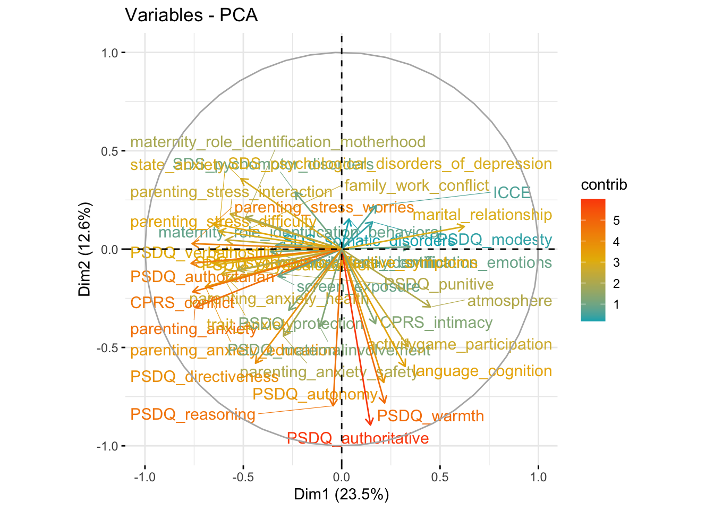

Portfolio 2
I learned substantial about R in these past few weeks both in this course and in Veronica’s stats course. In this project, I want to return to a dataset I worked on a year ago with no success. I wanted it to do structural equation modelling on it, but it has too few data points. After consulting Veronica, now I want to try principal component analysis instead and conduct regression analyses with the principal components.
The data I use is the behavioral section of a large infant development project that my previous lab collected and is still collecting. I’m not typing out the project name here because the data are not published yet, I’m probably not supposed to use it, and this github repo is public. However, I’m using it now because I want to test my learning from the past few weeks, and there is no way to test it better than solving a problem/tackling a dataset that I couldn’t solve/tackle before.
To give you an idea about the dataset, in this study, parents are given a wide range of questionnaires, from parenting practices, family functioning, to child social-emotional development. There are certainly many ways to look at the data with hypotheses. However, for the purpose of my practice, I’ll explore the dataset as a whole for now, with the goal of trying to predict child social-emotional development with environmental factors.
Prep
#install.packages("factoextra")
library(readxl)
library(factoextra)## Loading required package: ggplot2## Welcome! Want to learn more? See two factoextra-related books at https://goo.gl/ve3WBalibrary(tidyverse)## ── Attaching core tidyverse packages ──────────────────────── tidyverse 2.0.0 ──
## ✔ dplyr 1.1.4 ✔ readr 2.1.5
## ✔ forcats 1.0.0 ✔ stringr 1.5.1
## ✔ lubridate 1.9.4 ✔ tibble 3.2.1
## ✔ purrr 1.0.2 ✔ tidyr 1.3.1## ── Conflicts ────────────────────────────────────────── tidyverse_conflicts() ──
## ✖ dplyr::filter() masks stats::filter()
## ✖ dplyr::lag() masks stats::lag()
## ℹ Use the conflicted package (<http://conflicted.r-lib.org/>) to force all conflicts to become errorscbcp_bh <- read_excel("data/cbcp_bh.xlsx")
# Mean imputation using mutate_all
bh_data_mean_imputed <- cbcp_bh %>%
mutate_all(~ ifelse(is.na(.), mean(., na.rm = TRUE), .))Compute PCA
cbcp_bh_active <- bh_data_mean_imputed[, 3:40]res.pca <- prcomp(cbcp_bh_active, scale = TRUE)fviz_eig(res.pca)fviz_pca_var(res.pca,
col.var = "contrib", # Color by contributions to the PC
gradient.cols = c("#00AFBB", "#E7B800", "#FC4E07"),
repel = TRUE # Avoid text overlapping
)
# Eigenvalues
eig.val <- get_eigenvalue(res.pca)
eig.val## eigenvalue variance.percent cumulative.variance.percent
## Dim.1 8.922519e+00 2.348031e+01 23.48031
## Dim.2 4.786263e+00 1.259543e+01 36.07574
## Dim.3 2.906110e+00 7.647659e+00 43.72340
## Dim.4 2.513250e+00 6.613816e+00 50.33722
## Dim.5 2.030446e+00 5.343278e+00 55.68049
## Dim.6 1.865703e+00 4.909744e+00 60.59024
## Dim.7 1.750743e+00 4.607219e+00 65.19746
## Dim.8 1.560560e+00 4.106736e+00 69.30419
## Dim.9 1.419537e+00 3.735624e+00 73.03982
## Dim.10 1.288252e+00 3.390138e+00 76.42996
## Dim.11 1.065664e+00 2.804380e+00 79.23433
## Dim.12 1.021222e+00 2.687425e+00 81.92176
## Dim.13 9.150172e-01 2.407940e+00 84.32970
## Dim.14 7.520048e-01 1.978960e+00 86.30866
## Dim.15 6.806922e-01 1.791295e+00 88.09996
## Dim.16 6.336370e-01 1.667466e+00 89.76742
## Dim.17 5.491512e-01 1.445135e+00 91.21256
## Dim.18 5.394590e-01 1.419629e+00 92.63219
## Dim.19 4.654298e-01 1.224815e+00 93.85700
## Dim.20 4.401021e-01 1.158163e+00 95.01516
## Dim.21 3.185256e-01 8.382253e-01 95.85339
## Dim.22 2.706798e-01 7.123152e-01 96.56570
## Dim.23 2.573169e-01 6.771498e-01 97.24285
## Dim.24 2.149202e-01 5.655794e-01 97.80843
## Dim.25 2.025684e-01 5.330749e-01 98.34151
## Dim.26 1.634955e-01 4.302513e-01 98.77176
## Dim.27 1.302789e-01 3.428392e-01 99.11460
## Dim.28 9.707137e-02 2.554510e-01 99.37005
## Dim.29 7.571486e-02 1.992496e-01 99.56930
## Dim.30 5.718025e-02 1.504743e-01 99.71977
## Dim.31 3.624364e-02 9.537800e-02 99.81515
## Dim.32 3.045024e-02 8.013222e-02 99.89528
## Dim.33 2.704824e-02 7.117958e-02 99.96646
## Dim.34 8.047900e-03 2.117868e-02 99.98764
## Dim.35 4.255525e-03 1.119875e-02 99.99884
## Dim.36 4.362294e-04 1.147972e-03 99.99999
## Dim.37 3.842790e-06 1.011261e-05 100.00000
## Dim.38 3.645917e-07 9.594519e-07 100.00000# Results for Variables
res.var <- get_pca_var(res.pca)
res.var$coord # Coordinates## Dim.1 Dim.2 Dim.3
## ICCE 0.17599511 0.221000470 -0.240157164
## parenting_anxiety -0.74528840 -0.297016987 -0.381153309
## parenting_anxiety_health -0.57446555 -0.155980943 -0.458068069
## parenting_anxiety_safety -0.29606977 -0.442033094 -0.481869644
## parenting_anxiety_education -0.69245543 -0.191816428 -0.160656376
## work_family_conflict -0.36197992 -0.012875844 -0.608504336
## family_work_conflict -0.58783043 0.047320414 -0.217081382
## maternity_role_identification_motherhood -0.48881805 0.162899019 0.166251775
## maternity_role_identification_emotions 0.34778762 0.011730800 0.190618216
## maternity_role_identification_behavioral -0.33579960 0.017201148 0.063006992
## SDS_psychogenic_affective_symptoms -0.65925069 -0.069592825 0.208346375
## SDS_pychomotor_disorders -0.23660491 0.290280160 0.381017656
## SDS_somatic_disorders 0.03755689 0.153272949 0.672688864
## SDS_psychological_disorders_of_depression -0.62388519 0.091387289 0.196183295
## state_anxiety -0.51295969 0.358339814 -0.048039436
## trait_anxiety -0.61108057 -0.125924612 -0.013430953
## marital_relationship 0.62363973 0.115159570 0.252869680
## PSDQ_warmth 0.21831828 -0.782484571 -0.040417039
## PSDQ_reasoning -0.04371582 -0.796609980 0.124038262
## PSDQ_autonomy 0.21395764 -0.677837073 -0.077251057
## PSDQ_authoritative 0.14637786 -0.894493161 0.004268246
## PSDQ_physicalcoercion -0.64107094 -0.078796497 0.348774984
## PSDQ_verbalhostility -0.65404495 -0.004746844 0.298017094
## PSDQ_punitive -0.53054229 -0.105522692 0.322302551
## PSDQ_authoritarian -0.76571414 -0.072416509 0.403274516
## PSDQ_modesty 0.15736660 0.138603680 -0.030809331
## PSDQ_protection -0.26891229 -0.310376050 0.153927110
## PSDQ_directiveness -0.43810978 -0.580105543 0.178625530
## PSDQ_maternalinvolvement -0.11104968 -0.394848283 0.116282354
## atmosphere 0.45075183 -0.294378923 0.425509709
## activitygame_participation 0.33777412 -0.495301101 0.235883941
## language_cognition 0.32283865 -0.596520740 0.202814166
## parenting_stress_worries -0.76073336 0.028165215 0.126581657
## parenting_stress_interaction -0.56658563 0.178971952 -0.006268160
## parenting_stress_difficulty -0.65511333 0.130375122 0.031934743
## screen_exposure -0.32324641 -0.139713164 -0.280486636
## CPRS_conflict -0.75746605 -0.217244382 0.217989277
## CPRS_intimacy 0.17224842 -0.378742109 -0.113189367
## Dim.4 Dim.5 Dim.6
## ICCE 0.205538747 -0.03967041 0.135367875
## parenting_anxiety -0.224142979 -0.01441066 -0.255540141
## parenting_anxiety_health -0.153311110 0.19697838 -0.369246459
## parenting_anxiety_safety -0.235917026 -0.22504046 -0.254551805
## parenting_anxiety_education -0.351998177 -0.02986138 -0.034685568
## work_family_conflict -0.058700503 -0.02400053 0.167685173
## family_work_conflict 0.244930830 0.16064185 0.276716819
## maternity_role_identification_motherhood 0.478055408 -0.09524086 0.110830729
## maternity_role_identification_emotions -0.279964350 0.07756953 -0.595026240
## maternity_role_identification_behavioral 0.488352345 0.20807658 -0.327840845
## SDS_psychogenic_affective_symptoms 0.023867302 0.01813122 -0.188224469
## SDS_pychomotor_disorders 0.229231123 -0.45590124 -0.024057979
## SDS_somatic_disorders 0.106795023 -0.28047479 -0.369434346
## SDS_psychological_disorders_of_depression 0.201312349 0.29030650 -0.183209007
## state_anxiety 0.366464714 0.04456365 0.154064702
## trait_anxiety 0.455498461 0.18953284 -0.152031982
## marital_relationship 0.331022646 0.26296979 -0.004207847
## PSDQ_warmth 0.072297214 -0.25654418 0.194059800
## PSDQ_reasoning 0.172449554 -0.06269582 0.148004397
## PSDQ_autonomy 0.292709262 -0.09712778 -0.158579018
## PSDQ_authoritative 0.223471716 -0.15603937 0.063579309
## PSDQ_physicalcoercion -0.332676322 -0.18531025 -0.109105509
## PSDQ_verbalhostility -0.250186614 0.12986825 0.170635251
## PSDQ_punitive -0.290672799 0.09753188 -0.137453177
## PSDQ_authoritarian -0.361355284 0.01289598 -0.022237244
## PSDQ_modesty 0.120573957 0.44668953 -0.271355891
## PSDQ_protection 0.164450725 -0.23416756 -0.077347323
## PSDQ_directiveness 0.020122101 0.13602411 0.294702409
## PSDQ_maternalinvolvement 0.404900825 -0.45988707 -0.234376123
## atmosphere -0.072534118 0.44704353 0.217139787
## activitygame_participation -0.191535548 0.38607378 0.012167001
## language_cognition -0.103432173 0.42510724 0.042018446
## parenting_stress_worries 0.131163010 0.01682382 0.045048783
## parenting_stress_interaction 0.019535278 0.03939237 0.404000032
## parenting_stress_difficulty -0.011894512 0.10625815 0.105420786
## screen_exposure 0.462580719 0.42217121 -0.286518808
## CPRS_conflict -0.007368397 0.07375179 0.264398771
## CPRS_intimacy 0.056569878 0.01398076 -0.017905020
## Dim.7 Dim.8
## ICCE -0.000295823 0.085493546
## parenting_anxiety -0.094742426 0.038747017
## parenting_anxiety_health 0.063398900 -0.217114550
## parenting_anxiety_safety -0.104090233 0.213766266
## parenting_anxiety_education -0.179027873 0.244840203
## work_family_conflict -0.259983029 -0.217986377
## family_work_conflict -0.073677301 -0.164052659
## maternity_role_identification_motherhood -0.379877466 0.325408496
## maternity_role_identification_emotions 0.291458800 -0.295487816
## maternity_role_identification_behavioral -0.380846797 -0.003187098
## SDS_psychogenic_affective_symptoms -0.140999460 -0.207484882
## SDS_pychomotor_disorders -0.078700202 -0.129594337
## SDS_somatic_disorders -0.273873340 -0.060191211
## SDS_psychological_disorders_of_depression -0.011060585 -0.444609589
## state_anxiety 0.189742941 -0.060707044
## trait_anxiety 0.060070621 0.282637012
## marital_relationship 0.014549404 -0.040618838
## PSDQ_warmth -0.026287516 0.086979085
## PSDQ_reasoning 0.194915680 -0.085401253
## PSDQ_autonomy 0.356369885 -0.094775545
## PSDQ_authoritative 0.223060453 -0.045428098
## PSDQ_physicalcoercion 0.107606293 -0.012322876
## PSDQ_verbalhostility 0.005584695 -0.164677436
## PSDQ_punitive 0.044646174 0.461960097
## PSDQ_authoritarian 0.065915924 0.090490973
## PSDQ_modesty 0.402855790 0.151342033
## PSDQ_protection 0.178260330 -0.261541982
## PSDQ_directiveness -0.141938215 -0.187512908
## PSDQ_maternalinvolvement 0.114622013 0.183616863
## atmosphere 0.007656630 0.076961540
## activitygame_participation -0.298204871 -0.023658301
## language_cognition -0.228925820 0.125462287
## parenting_stress_worries -0.124334774 -0.034804751
## parenting_stress_interaction 0.367541819 -0.113616814
## parenting_stress_difficulty 0.386298566 -0.123405268
## screen_exposure 0.063502752 0.200571972
## CPRS_conflict 0.139306867 0.147246121
## CPRS_intimacy -0.425642972 -0.486332433
## Dim.9 Dim.10
## ICCE 0.348475284 -0.65519628
## parenting_anxiety -0.081148460 -0.06361560
## parenting_anxiety_health -0.046212490 -0.03906975
## parenting_anxiety_safety -0.182280411 -0.18456884
## parenting_anxiety_education -0.166623766 0.09933152
## work_family_conflict 0.020332605 -0.09534362
## family_work_conflict -0.007497548 -0.26800587
## maternity_role_identification_motherhood -0.086256599 0.08305036
## maternity_role_identification_emotions 0.200572296 0.02472351
## maternity_role_identification_behavioral -0.151124106 0.30667669
## SDS_psychogenic_affective_symptoms 0.254798102 -0.32901765
## SDS_pychomotor_disorders -0.088563459 0.04422076
## SDS_somatic_disorders 0.003152629 -0.25386862
## SDS_psychological_disorders_of_depression 0.226665846 0.01648331
## state_anxiety 0.168153054 -0.22427575
## trait_anxiety 0.180702032 0.13297871
## marital_relationship -0.387276006 -0.09128799
## PSDQ_warmth -0.020579959 -0.15870875
## PSDQ_reasoning 0.020113372 0.15139286
## PSDQ_autonomy 0.259676707 0.15954988
## PSDQ_authoritative 0.109894130 0.07396626
## PSDQ_physicalcoercion 0.038387951 0.01389951
## PSDQ_verbalhostility -0.224729265 -0.09664492
## PSDQ_punitive 0.078948871 -0.06485825
## PSDQ_authoritarian -0.054742530 -0.06081162
## PSDQ_modesty -0.290676452 -0.16898001
## PSDQ_protection -0.568348740 -0.31415217
## PSDQ_directiveness 0.044365000 0.05712777
## PSDQ_maternalinvolvement -0.031626435 -0.18044123
## atmosphere -0.136299456 -0.10908564
## activitygame_participation 0.077367580 -0.14099973
## language_cognition 0.216727163 -0.18165995
## parenting_stress_worries 0.312440943 0.19272888
## parenting_stress_interaction -0.109050211 0.05874371
## parenting_stress_difficulty -0.060947338 0.05084811
## screen_exposure -0.159708752 -0.04615227
## CPRS_conflict -0.077837156 0.01618861
## CPRS_intimacy -0.232378754 0.07646110
## Dim.11 Dim.12
## ICCE 0.1026237685 -0.101496240
## parenting_anxiety 0.0008549379 0.055742533
## parenting_anxiety_health 0.0390118093 -0.011505607
## parenting_anxiety_safety -0.1507596253 -0.033759376
## parenting_anxiety_education 0.0687316457 0.078285051
## work_family_conflict 0.0130227798 -0.037545409
## family_work_conflict 0.2283809003 -0.033955240
## maternity_role_identification_motherhood 0.0272581334 0.083021306
## maternity_role_identification_emotions 0.1425829819 0.091739050
## maternity_role_identification_behavioral 0.0903061690 0.105790204
## SDS_psychogenic_affective_symptoms -0.2383605174 0.151140206
## SDS_pychomotor_disorders -0.4125827802 -0.278517216
## SDS_somatic_disorders 0.0406978872 0.024903007
## SDS_psychological_disorders_of_depression 0.1334326510 0.075746296
## state_anxiety 0.0455568513 0.208576020
## trait_anxiety -0.0343079034 -0.183333533
## marital_relationship 0.1202393510 0.206554366
## PSDQ_warmth -0.0129744804 0.276063001
## PSDQ_reasoning 0.0718554850 -0.030948896
## PSDQ_autonomy -0.0923989613 0.005753773
## PSDQ_authoritative -0.0145298896 0.085909347
## PSDQ_physicalcoercion -0.0025800965 -0.158033742
## PSDQ_verbalhostility -0.0893522581 -0.072071783
## PSDQ_punitive 0.3078317655 0.141413874
## PSDQ_authoritarian 0.0723738969 -0.049242232
## PSDQ_modesty 0.1287767680 -0.446398436
## PSDQ_protection -0.0645940904 0.161905724
## PSDQ_directiveness 0.3897365156 -0.129134160
## PSDQ_maternalinvolvement 0.2313357460 -0.284276617
## atmosphere -0.0118100042 0.111279788
## activitygame_participation -0.2913386100 -0.165738639
## language_cognition -0.2468495568 -0.123022836
## parenting_stress_worries -0.0799526290 -0.063111222
## parenting_stress_interaction -0.1069254000 -0.291069982
## parenting_stress_difficulty -0.2347431847 0.292045259
## screen_exposure -0.3133728968 0.062218035
## CPRS_conflict -0.0361591719 0.031929859
## CPRS_intimacy 0.1173163004 -0.225335853
## Dim.13 Dim.14
## ICCE 0.325704573 0.090718557
## parenting_anxiety -0.053046165 0.061402191
## parenting_anxiety_health -0.010421965 -0.026123731
## parenting_anxiety_safety 0.043148501 0.126374260
## parenting_anxiety_education -0.161162768 0.084403540
## work_family_conflict 0.209228991 -0.341065457
## family_work_conflict -0.409973798 -0.227386881
## maternity_role_identification_motherhood -0.032202065 -0.200888374
## maternity_role_identification_emotions 0.042792042 -0.044305752
## maternity_role_identification_behavioral 0.256984657 -0.008477755
## SDS_psychogenic_affective_symptoms -0.255297737 -0.131219313
## SDS_pychomotor_disorders -0.102581305 -0.129805875
## SDS_somatic_disorders -0.079917868 0.154365826
## SDS_psychological_disorders_of_depression 0.069475767 -0.008830819
## state_anxiety -0.079135566 0.289178783
## trait_anxiety 0.037174433 -0.071503150
## marital_relationship 0.203941397 -0.033452990
## PSDQ_warmth -0.008441378 -0.037670314
## PSDQ_reasoning -0.074991637 -0.078582002
## PSDQ_autonomy 0.075153251 -0.067120866
## PSDQ_authoritative -0.003516878 -0.074991055
## PSDQ_physicalcoercion -0.026845184 -0.105770116
## PSDQ_verbalhostility 0.332930308 -0.202066695
## PSDQ_punitive 0.113234678 0.023115379
## PSDQ_authoritarian 0.180429837 -0.128299092
## PSDQ_modesty -0.253642632 -0.070065343
## PSDQ_protection 0.071239316 0.039989256
## PSDQ_directiveness 0.041848537 0.057379897
## PSDQ_maternalinvolvement 0.080264819 -0.005944099
## atmosphere -0.202528140 -0.086813532
## activitygame_participation 0.108690430 0.083210231
## language_cognition 0.037917498 0.005256491
## parenting_stress_worries -0.010528029 0.193302670
## parenting_stress_interaction 0.212206767 0.178313969
## parenting_stress_difficulty 0.026196411 0.023697134
## screen_exposure 0.039353003 0.056661597
## CPRS_conflict -0.084449106 0.274069597
## CPRS_intimacy -0.081143390 0.314430990
## Dim.15 Dim.16
## ICCE -0.055456943 -0.004156649
## parenting_anxiety -0.023139011 -0.191822682
## parenting_anxiety_health 0.086268675 -0.071799651
## parenting_anxiety_safety -0.208343235 -0.104372565
## parenting_anxiety_education -0.041030502 -0.008024653
## work_family_conflict -0.102935097 0.304925379
## family_work_conflict -0.026880442 0.016179064
## maternity_role_identification_motherhood -0.041727415 -0.053925198
## maternity_role_identification_emotions -0.193114764 0.128619463
## maternity_role_identification_behavioral -0.170600765 0.157041769
## SDS_psychogenic_affective_symptoms -0.056828520 0.092592034
## SDS_pychomotor_disorders -0.061758742 0.019498422
## SDS_somatic_disorders -0.141738114 0.007856853
## SDS_psychological_disorders_of_depression 0.037990260 -0.238113883
## state_anxiety 0.192631301 0.146878626
## trait_anxiety 0.031910396 0.050778399
## marital_relationship 0.060880654 -0.075316986
## PSDQ_warmth -0.009538176 0.040734370
## PSDQ_reasoning -0.103719750 -0.042077610
## PSDQ_autonomy 0.105030499 0.071048118
## PSDQ_authoritative -0.002419161 0.025099640
## PSDQ_physicalcoercion 0.371468559 0.114401019
## PSDQ_verbalhostility 0.022877860 -0.095367064
## PSDQ_punitive -0.052372573 0.181849692
## PSDQ_authoritarian 0.152561384 0.072723247
## PSDQ_modesty -0.135061415 0.023502102
## PSDQ_protection 0.091021716 -0.126206352
## PSDQ_directiveness -0.030875317 -0.154345431
## PSDQ_maternalinvolvement -0.072023517 0.033912769
## atmosphere -0.117991413 0.049064324
## activitygame_participation 0.022269767 0.147586515
## language_cognition -0.043215662 -0.156591084
## parenting_stress_worries -0.104576191 -0.221475276
## parenting_stress_interaction -0.190809504 0.008774930
## parenting_stress_difficulty -0.358190491 0.121481155
## screen_exposure 0.244041444 0.036625780
## CPRS_conflict 0.009618957 0.208847178
## CPRS_intimacy 0.063408872 0.281359209
## Dim.17 Dim.18
## ICCE 0.1691459772 0.107101565
## parenting_anxiety -0.0065901381 0.079452466
## parenting_anxiety_health 0.0442002728 0.283702996
## parenting_anxiety_safety -0.1008220667 0.011838905
## parenting_anxiety_education -0.0408950021 -0.250998029
## work_family_conflict -0.0153263334 -0.052535419
## family_work_conflict -0.1088271421 -0.007041990
## maternity_role_identification_motherhood -0.1472090347 0.181151646
## maternity_role_identification_emotions -0.1211941932 0.144613993
## maternity_role_identification_behavioral 0.0057519018 -0.010170801
## SDS_psychogenic_affective_symptoms 0.0662815243 -0.114887931
## SDS_pychomotor_disorders 0.0535352917 0.306860214
## SDS_somatic_disorders -0.1561049083 -0.061687726
## SDS_psychological_disorders_of_depression -0.1159173191 -0.117312445
## state_anxiety -0.1575797811 0.007434334
## trait_anxiety 0.0346528088 -0.087144291
## marital_relationship -0.1053537669 0.007074191
## PSDQ_warmth -0.2158965245 0.151088050
## PSDQ_reasoning -0.0286184216 -0.026376331
## PSDQ_autonomy 0.0331161505 0.004478977
## PSDQ_authoritative -0.0733993636 0.043557797
## PSDQ_physicalcoercion -0.0272237889 -0.050120886
## PSDQ_verbalhostility -0.0003828143 -0.050728411
## PSDQ_punitive 0.0717950324 0.193376308
## PSDQ_authoritarian 0.0135482322 0.026422484
## PSDQ_modesty -0.1087939489 0.043643739
## PSDQ_protection 0.1281996075 -0.023399057
## PSDQ_directiveness 0.0550906802 0.094858528
## PSDQ_maternalinvolvement 0.1332864711 -0.262595354
## atmosphere 0.3110624781 0.045462569
## activitygame_participation -0.2262827632 -0.086014201
## language_cognition -0.0165716577 -0.000538934
## parenting_stress_worries 0.1518563195 0.067154773
## parenting_stress_interaction -0.2269178249 0.011344399
## parenting_stress_difficulty 0.1363859221 -0.107257693
## screen_exposure 0.0668307046 0.009559254
## CPRS_conflict -0.0220046898 0.103811189
## CPRS_intimacy 0.1436402295 0.057223698
## Dim.19 Dim.20
## ICCE 0.0975649782 -0.14105403
## parenting_anxiety 0.0018770672 0.04037522
## parenting_anxiety_health 0.1121644213 -0.02607912
## parenting_anxiety_safety -0.0886666371 0.08977812
## parenting_anxiety_education 0.0703330650 -0.12525440
## work_family_conflict -0.0571629826 -0.08344790
## family_work_conflict -0.1007296984 0.10724572
## maternity_role_identification_motherhood 0.0004858411 -0.03787581
## maternity_role_identification_emotions -0.0140512039 0.14082288
## maternity_role_identification_behavioral -0.0678928713 -0.06202695
## SDS_psychogenic_affective_symptoms 0.0174310036 -0.03492519
## SDS_pychomotor_disorders 0.0579533384 0.02026847
## SDS_somatic_disorders 0.0674007473 -0.13521339
## SDS_psychological_disorders_of_depression 0.0301270954 -0.07919645
## state_anxiety 0.0056053243 0.21819205
## trait_anxiety -0.1575905751 0.21170170
## marital_relationship 0.0053319981 -0.04841284
## PSDQ_warmth -0.0081404484 -0.06269412
## PSDQ_reasoning 0.3387750446 0.10843775
## PSDQ_autonomy -0.2155249695 -0.12232513
## PSDQ_authoritative 0.0523650755 -0.02803012
## PSDQ_physicalcoercion -0.0703983200 -0.21567073
## PSDQ_verbalhostility 0.1621784423 0.21697554
## PSDQ_punitive -0.0582653901 0.07695255
## PSDQ_authoritarian 0.0207855248 0.03100797
## PSDQ_modesty -0.0188598224 -0.14261556
## PSDQ_protection -0.2852204538 0.04602334
## PSDQ_directiveness -0.0227875052 -0.14181572
## PSDQ_maternalinvolvement 0.0900735401 0.09343621
## atmosphere -0.0577418949 0.04318428
## activitygame_participation -0.0508933017 0.08995182
## language_cognition -0.0698371955 -0.02618966
## parenting_stress_worries -0.1254837887 0.02503346
## parenting_stress_interaction -0.0832585902 -0.05310632
## parenting_stress_difficulty 0.0493816450 -0.12129715
## screen_exposure 0.2221697925 -0.08102824
## CPRS_conflict 0.0448367760 -0.08519403
## CPRS_intimacy 0.0393666703 0.06144267
## Dim.21 Dim.22
## ICCE 0.0368656757 0.008598357
## parenting_anxiety -0.0615966282 0.016832428
## parenting_anxiety_health -0.1627546386 -0.104759881
## parenting_anxiety_safety 0.1677601825 0.042345234
## parenting_anxiety_education -0.0453226940 -0.108494229
## work_family_conflict 0.0946062708 -0.019702197
## family_work_conflict -0.0062911459 0.042080022
## maternity_role_identification_motherhood -0.0863060805 0.089550312
## maternity_role_identification_emotions -0.0099633774 -0.063182711
## maternity_role_identification_behavioral 0.1698505901 -0.147809675
## SDS_psychogenic_affective_symptoms -0.0852668303 0.086992520
## SDS_pychomotor_disorders 0.0395554616 -0.104517347
## SDS_somatic_disorders -0.0283967474 0.009569428
## SDS_psychological_disorders_of_depression 0.0132512434 -0.040401327
## state_anxiety 0.1537943150 -0.116028109
## trait_anxiety -0.1491017956 -0.034605951
## marital_relationship -0.0829741464 0.121846219
## PSDQ_warmth -0.0842053383 -0.061385052
## PSDQ_reasoning 0.1936325164 0.082465446
## PSDQ_autonomy -0.0512001600 0.049911259
## PSDQ_authoritative 0.0313323824 0.035695653
## PSDQ_physicalcoercion 0.1130488718 0.006833265
## PSDQ_verbalhostility -0.0271836346 -0.009796912
## PSDQ_punitive -0.0081094690 0.142498143
## PSDQ_authoritarian 0.0331862080 0.051289868
## PSDQ_modesty 0.1194630853 0.057909783
## PSDQ_protection 0.0740471863 -0.009184447
## PSDQ_directiveness 0.0151149554 -0.061255519
## PSDQ_maternalinvolvement -0.1237327501 -0.083362495
## atmosphere 0.0164754292 -0.138841800
## activitygame_participation 0.0005856482 0.069836002
## language_cognition -0.0050907347 -0.121645639
## parenting_stress_worries 0.1220093077 0.166491979
## parenting_stress_interaction -0.1467029993 -0.007951084
## parenting_stress_difficulty -0.0586749172 0.081945958
## screen_exposure 0.0193595344 0.049702040
## CPRS_conflict -0.0194348874 -0.111370764
## CPRS_intimacy -0.0982126568 0.142013808
## Dim.23 Dim.24 Dim.25
## ICCE 0.024748544 -0.147395881 -0.03331047
## parenting_anxiety 0.064290899 0.033340902 -0.04814676
## parenting_anxiety_health -0.114870204 0.059266620 -0.02528128
## parenting_anxiety_safety -0.039763364 -0.074573744 -0.05522586
## parenting_anxiety_education 0.139100148 -0.060717026 0.03392989
## work_family_conflict 0.113427682 0.167802738 0.06146655
## family_work_conflict -0.004068759 -0.066196660 -0.04183001
## maternity_role_identification_motherhood -0.162008924 -0.104770689 -0.00680753
## maternity_role_identification_emotions 0.082428499 -0.109268306 0.04712992
## maternity_role_identification_behavioral -0.070819802 -0.052035813 -0.07164567
## SDS_psychogenic_affective_symptoms -0.014406995 0.014896090 0.06992138
## SDS_pychomotor_disorders 0.102905140 -0.012619470 0.09143915
## SDS_somatic_disorders 0.078403677 0.134157910 -0.12420973
## SDS_psychological_disorders_of_depression -0.062875995 -0.044403773 0.05321767
## state_anxiety 0.011171078 0.058040862 -0.04929854
## trait_anxiety 0.196928209 -0.077111624 -0.01545349
## marital_relationship 0.179765876 0.025645239 0.03566682
## PSDQ_warmth 0.057365689 0.019652658 -0.09725208
## PSDQ_reasoning 0.049619140 -0.065991302 0.04863366
## PSDQ_autonomy -0.060510870 0.074909831 -0.07511877
## PSDQ_authoritative 0.015250920 0.011478733 -0.04520207
## PSDQ_physicalcoercion 0.023770595 -0.144518958 -0.09406608
## PSDQ_verbalhostility -0.027620454 0.082621644 -0.13604077
## PSDQ_punitive 0.013513587 0.044927003 0.10624844
## PSDQ_authoritarian 0.002909500 -0.009332414 -0.06150080
## PSDQ_modesty -0.016630402 0.082330266 -0.02890535
## PSDQ_protection -0.014215822 -0.035031668 0.12714026
## PSDQ_directiveness 0.030172035 0.016983638 0.10694445
## PSDQ_maternalinvolvement -0.120269028 0.063312039 0.03861612
## atmosphere -0.021921213 -0.002372966 -0.14415335
## activitygame_participation -0.162316685 -0.003740236 0.10064251
## language_cognition 0.087672073 -0.021014265 0.02244010
## parenting_stress_worries 0.054832777 0.131971420 -0.05710611
## parenting_stress_interaction 0.029980428 -0.046621502 -0.04011407
## parenting_stress_difficulty -0.038407093 -0.078133891 -0.02673851
## screen_exposure 0.058646696 0.008377855 0.02747612
## CPRS_conflict -0.056648361 0.069901876 0.10114493
## CPRS_intimacy 0.042726925 -0.084368498 -0.07792884
## Dim.26 Dim.27
## ICCE -0.0173899846 -0.0732341347
## parenting_anxiety -0.0479069575 -0.0501900281
## parenting_anxiety_health 0.0633958908 0.0254722191
## parenting_anxiety_safety -0.0186750652 0.0918748983
## parenting_anxiety_education -0.1350684426 -0.0290978022
## work_family_conflict -0.0416885835 0.0651406307
## family_work_conflict -0.0096906413 -0.1166796898
## maternity_role_identification_motherhood -0.1181699899 0.0727865514
## maternity_role_identification_emotions -0.1314802288 -0.0518019647
## maternity_role_identification_behavioral 0.0997332282 -0.0693087802
## SDS_psychogenic_affective_symptoms 0.0921243187 0.0537866475
## SDS_pychomotor_disorders -0.0635844644 -0.0068482599
## SDS_somatic_disorders 0.0228836053 0.0234398617
## SDS_psychological_disorders_of_depression 0.0130933019 0.0710278457
## state_anxiety -0.0846612874 0.0917798817
## trait_anxiety 0.0882957226 -0.0085185024
## marital_relationship -0.0493959976 -0.0147226314
## PSDQ_warmth 0.0716591000 -0.0564311191
## PSDQ_reasoning 0.0683804470 0.0316272328
## PSDQ_autonomy -0.1159609528 0.0044375355
## PSDQ_authoritative 0.0084465923 -0.0046639538
## PSDQ_physicalcoercion 0.0007265035 0.0056921556
## PSDQ_verbalhostility -0.0298083299 -0.0606836763
## PSDQ_punitive 0.0474143184 0.0736034628
## PSDQ_authoritarian 0.0039777553 0.0007656529
## PSDQ_modesty 0.0196452743 -0.0134198284
## PSDQ_protection 0.0394966058 -0.0125043547
## PSDQ_directiveness -0.0781782907 0.0294770006
## PSDQ_maternalinvolvement -0.0626693054 0.0005149662
## atmosphere -0.0846891884 0.0870564485
## activitygame_participation -0.0760856383 -0.0827000899
## language_cognition 0.0471123866 0.0542380096
## parenting_stress_worries -0.0510075184 -0.0860360282
## parenting_stress_interaction 0.0295087776 0.1002896987
## parenting_stress_difficulty -0.0307670182 -0.0205350476
## screen_exposure -0.0705441777 0.0136938315
## CPRS_conflict 0.0398003938 -0.1135958627
## CPRS_intimacy -0.0006210312 0.0408943815
## Dim.28 Dim.29
## ICCE 0.042874565 0.0251539080
## parenting_anxiety 0.010933886 0.0083611843
## parenting_anxiety_health 0.038040880 -0.0531823193
## parenting_anxiety_safety -0.111356886 0.0620474867
## parenting_anxiety_education 0.084816303 -0.0171945955
## work_family_conflict 0.033207074 0.0009445367
## family_work_conflict -0.022306092 -0.0772187063
## maternity_role_identification_motherhood 0.079785168 0.0466219688
## maternity_role_identification_emotions -0.010130309 0.0065370731
## maternity_role_identification_behavioral -0.025712974 -0.0376171710
## SDS_psychogenic_affective_symptoms -0.082358601 0.0454468592
## SDS_pychomotor_disorders -0.025016977 -0.0219782564
## SDS_somatic_disorders 0.059772587 0.0048005424
## SDS_psychological_disorders_of_depression 0.003068177 0.0211720721
## state_anxiety 0.019028227 -0.0047267420
## trait_anxiety 0.012736418 0.0792833722
## marital_relationship -0.079092378 -0.0045302909
## PSDQ_warmth -0.054538260 -0.0288019416
## PSDQ_reasoning 0.065238340 -0.0139229233
## PSDQ_autonomy 0.043013771 0.0418932263
## PSDQ_authoritative 0.026889169 0.0021793513
## PSDQ_physicalcoercion -0.042013418 -0.0335021169
## PSDQ_verbalhostility 0.012923282 0.0682617431
## PSDQ_punitive 0.021158025 -0.0630945456
## PSDQ_authoritarian -0.003564381 -0.0061619070
## PSDQ_modesty 0.032892253 0.0481681019
## PSDQ_protection 0.098891671 -0.0105166627
## PSDQ_directiveness -0.101442924 0.0481875319
## PSDQ_maternalinvolvement -0.056531756 -0.0705352658
## atmosphere -0.028795464 -0.0112617094
## activitygame_participation 0.002018219 -0.0378010022
## language_cognition 0.075216548 -0.0420171319
## parenting_stress_worries -0.005855226 -0.0623158997
## parenting_stress_interaction -0.018127506 -0.0783849970
## parenting_stress_difficulty 0.009628615 -0.0137825436
## screen_exposure -0.055032353 -0.0484300965
## CPRS_conflict -0.008004717 0.1021457702
## CPRS_intimacy 0.031441621 0.0215595757
## Dim.30 Dim.31
## ICCE -0.0271778891 -0.0260581525
## parenting_anxiety 0.0110974450 -0.0129148552
## parenting_anxiety_health -0.0649522031 0.0339961425
## parenting_anxiety_safety 0.0096737368 -0.0028223901
## parenting_anxiety_education -0.0567421388 -0.0564406959
## work_family_conflict 0.0376243645 0.0214674734
## family_work_conflict 0.0133943145 -0.0059435440
## maternity_role_identification_motherhood 0.0072300992 0.0336012754
## maternity_role_identification_emotions 0.0169651179 0.0277757982
## maternity_role_identification_behavioral -0.0501377209 -0.0228348529
## SDS_psychogenic_affective_symptoms -0.0866677231 -0.0250842250
## SDS_pychomotor_disorders 0.0041813533 -0.0473620704
## SDS_somatic_disorders -0.0046047704 0.0363320750
## SDS_psychological_disorders_of_depression 0.1095197531 -0.0748956687
## state_anxiety -0.0336357840 0.0167921227
## trait_anxiety -0.0027241003 0.0273222157
## marital_relationship -0.0434743666 -0.0024658086
## PSDQ_warmth 0.0605988372 -0.0144826058
## PSDQ_reasoning -0.0397710940 0.0102577609
## PSDQ_autonomy -0.0391198832 -0.0440779655
## PSDQ_authoritative -0.0131123558 -0.0199375299
## PSDQ_physicalcoercion 0.0067064166 0.0425208381
## PSDQ_verbalhostility -0.0040251833 -0.0147016583
## PSDQ_punitive 0.0186593340 -0.0481819029
## PSDQ_authoritarian 0.0047217728 -0.0057350406
## PSDQ_modesty 0.0071081859 -0.0123299787
## PSDQ_protection -0.0037494744 0.0139060394
## PSDQ_directiveness -0.0434411088 0.0537232531
## PSDQ_maternalinvolvement 0.0360982113 0.0142481843
## atmosphere 0.0005353558 -0.0263509767
## activitygame_participation -0.0331539355 0.0017536676
## language_cognition 0.0417532893 0.0398762954
## parenting_stress_worries 0.0045629494 0.0121381035
## parenting_stress_interaction -0.0374809884 -0.0256299509
## parenting_stress_difficulty 0.0387001320 0.0586495751
## screen_exposure 0.0443591213 0.0085583424
## CPRS_conflict 0.0422317031 -0.0003680529
## CPRS_intimacy 0.0400509270 -0.0148542957
## Dim.32 Dim.33
## ICCE -1.203233e-02 0.0032667694
## parenting_anxiety -1.823399e-02 -0.0126473817
## parenting_anxiety_health -4.049272e-04 0.0458489698
## parenting_anxiety_safety 2.044772e-02 0.0399064423
## parenting_anxiety_education 5.107045e-03 0.0009943031
## work_family_conflict -1.071633e-02 0.0005475739
## family_work_conflict 2.600726e-02 0.0278023934
## maternity_role_identification_motherhood 1.152221e-02 -0.0298727291
## maternity_role_identification_emotions 1.201873e-02 -0.0498879728
## maternity_role_identification_behavioral 1.614179e-02 -0.0130317448
## SDS_psychogenic_affective_symptoms 2.413096e-02 -0.0500894177
## SDS_pychomotor_disorders -1.389311e-03 0.0384553794
## SDS_somatic_disorders -3.523426e-02 0.0241678807
## SDS_psychological_disorders_of_depression -1.888314e-02 0.0290276784
## state_anxiety 1.292884e-02 0.0066575588
## trait_anxiety -5.049225e-02 0.0282528550
## marital_relationship 5.035414e-02 0.0498843929
## PSDQ_warmth -3.231766e-02 -0.0302002905
## PSDQ_reasoning -6.955615e-03 0.0084785517
## PSDQ_autonomy 2.984934e-02 0.0214960954
## PSDQ_authoritative -6.668283e-04 0.0027245712
## PSDQ_physicalcoercion 4.450122e-03 0.0092585667
## PSDQ_verbalhostility 2.073309e-02 -0.0186038233
## PSDQ_punitive 1.367158e-05 0.0154189767
## PSDQ_authoritarian 8.674593e-03 0.0025135584
## PSDQ_modesty -2.294773e-03 -0.0193717700
## PSDQ_protection -2.244624e-02 -0.0257278475
## PSDQ_directiveness -3.110936e-02 -0.0072399661
## PSDQ_maternalinvolvement 2.642085e-02 -0.0028058532
## atmosphere -3.995196e-02 0.0028461562
## activitygame_participation -5.887426e-02 0.0305671584
## language_cognition 9.091269e-02 -0.0041679738
## parenting_stress_worries 6.192408e-03 -0.0216775041
## parenting_stress_interaction -6.825281e-03 -0.0397170857
## parenting_stress_difficulty -1.516242e-03 0.0456381943
## screen_exposure -2.371700e-02 -0.0409642351
## CPRS_conflict 4.001976e-02 0.0083446356
## CPRS_intimacy 2.241335e-02 -0.0069052134
## Dim.34 Dim.35
## ICCE 0.0013563697 0.0031104204
## parenting_anxiety 0.0125195991 -0.0385905150
## parenting_anxiety_health 0.0072758769 0.0183357458
## parenting_anxiety_safety -0.0128400153 0.0125232904
## parenting_anxiety_education 0.0075027898 0.0131247340
## work_family_conflict 0.0025258195 0.0073875796
## family_work_conflict -0.0328788826 -0.0023080955
## maternity_role_identification_motherhood 0.0081725645 0.0062692342
## maternity_role_identification_emotions -0.0069862817 0.0102182765
## maternity_role_identification_behavioral 0.0006908702 -0.0100061194
## SDS_psychogenic_affective_symptoms 0.0106976130 0.0004611989
## SDS_pychomotor_disorders 0.0069822716 -0.0082256411
## SDS_somatic_disorders -0.0315249899 -0.0006142238
## SDS_psychological_disorders_of_depression 0.0075131132 0.0064919287
## state_anxiety 0.0216403390 -0.0095867370
## trait_anxiety 0.0043584392 0.0063304194
## marital_relationship 0.0175917394 0.0070939894
## PSDQ_warmth 0.0277337899 0.0068066512
## PSDQ_reasoning -0.0017798712 0.0030620834
## PSDQ_autonomy -0.0185032676 -0.0074578060
## PSDQ_authoritative -0.0007399252 0.0001105195
## PSDQ_physicalcoercion 0.0118599339 0.0026305084
## PSDQ_verbalhostility -0.0064057057 -0.0002483610
## PSDQ_punitive -0.0074167042 -0.0076089440
## PSDQ_authoritarian 0.0008924458 -0.0016547972
## PSDQ_modesty 0.0267424251 -0.0026831901
## PSDQ_protection -0.0040149684 0.0048521477
## PSDQ_directiveness -0.0077405383 -0.0135401621
## PSDQ_maternalinvolvement 0.0143536394 0.0014957974
## atmosphere -0.0004666171 0.0100429337
## activitygame_participation 0.0111848385 -0.0009986749
## language_cognition 0.0009161836 -0.0092807747
## parenting_stress_worries 0.0164673488 0.0239981127
## parenting_stress_interaction -0.0144858769 0.0021322227
## parenting_stress_difficulty 0.0149803243 -0.0134899440
## screen_exposure -0.0311323534 0.0010313440
## CPRS_conflict -0.0131818695 0.0121141944
## CPRS_intimacy 0.0087739359 -0.0011729944
## Dim.36 Dim.37
## ICCE 9.538862e-04 6.365696e-06
## parenting_anxiety 1.022733e-02 -5.631749e-06
## parenting_anxiety_health -5.449174e-04 8.647473e-06
## parenting_anxiety_safety -9.974907e-04 -2.201240e-06
## parenting_anxiety_education -4.250426e-03 5.744813e-06
## work_family_conflict 3.690682e-03 -7.422628e-06
## family_work_conflict -9.360459e-04 2.973044e-07
## maternity_role_identification_motherhood 1.949971e-03 -5.644609e-06
## maternity_role_identification_emotions 1.186511e-03 -1.176113e-05
## maternity_role_identification_behavioral 2.268873e-06 3.037811e-06
## SDS_psychogenic_affective_symptoms 4.028805e-04 3.381236e-06
## SDS_pychomotor_disorders -2.305931e-03 4.141259e-06
## SDS_somatic_disorders 4.346043e-04 6.942662e-06
## SDS_psychological_disorders_of_depression 9.145479e-04 -4.700243e-06
## state_anxiety -2.075590e-03 -2.442217e-07
## trait_anxiety -3.628822e-04 7.077490e-06
## marital_relationship 4.514263e-03 7.324122e-08
## PSDQ_warmth -5.041719e-03 3.590062e-04
## PSDQ_reasoning 4.322681e-03 4.423247e-04
## PSDQ_autonomy -1.503915e-03 4.415738e-04
## PSDQ_authoritative 5.383383e-04 -1.035540e-03
## PSDQ_physicalcoercion 4.284242e-03 5.198665e-04
## PSDQ_verbalhostility -4.152112e-03 5.485551e-04
## PSDQ_punitive -2.474259e-03 4.478283e-04
## PSDQ_authoritarian -2.130777e-03 -1.215754e-03
## PSDQ_modesty -3.213439e-03 3.273416e-06
## PSDQ_protection -4.555630e-04 1.776328e-06
## PSDQ_directiveness -5.769374e-03 7.767945e-06
## PSDQ_maternalinvolvement 1.839069e-03 -1.042169e-05
## atmosphere 5.811339e-03 -9.539371e-06
## activitygame_participation 1.033037e-03 7.156042e-06
## language_cognition -1.559226e-03 -9.628103e-06
## parenting_stress_worries 6.404652e-04 -6.189593e-06
## parenting_stress_interaction 3.737230e-03 -4.894195e-06
## parenting_stress_difficulty -4.155373e-03 2.508393e-06
## screen_exposure -2.318392e-03 -2.345394e-06
## CPRS_conflict 6.482067e-03 -7.034868e-06
## CPRS_intimacy -1.977762e-03 -5.552528e-06
## Dim.38
## ICCE 4.686312e-07
## parenting_anxiety 1.823749e-05
## parenting_anxiety_health -3.148392e-06
## parenting_anxiety_safety 7.838667e-07
## parenting_anxiety_education -1.120060e-05
## work_family_conflict 5.785170e-06
## family_work_conflict 4.059722e-06
## maternity_role_identification_motherhood 1.404412e-06
## maternity_role_identification_emotions 1.176792e-06
## maternity_role_identification_behavioral 1.046840e-06
## SDS_psychogenic_affective_symptoms 1.092154e-06
## SDS_pychomotor_disorders -5.242701e-06
## SDS_somatic_disorders 3.988517e-06
## SDS_psychological_disorders_of_depression 1.241513e-06
## state_anxiety -6.573317e-06
## trait_anxiety -4.084524e-06
## marital_relationship 6.408710e-06
## PSDQ_warmth 1.198907e-04
## PSDQ_reasoning 1.696511e-04
## PSDQ_autonomy 1.601085e-04
## PSDQ_authoritative -3.796900e-04
## PSDQ_physicalcoercion -1.310472e-04
## PSDQ_verbalhostility -1.469601e-04
## PSDQ_punitive -1.182251e-04
## PSDQ_authoritarian 3.122224e-04
## PSDQ_modesty -8.925538e-06
## PSDQ_protection -1.830180e-06
## PSDQ_directiveness -1.190934e-05
## PSDQ_maternalinvolvement 2.184880e-06
## atmosphere 9.178745e-06
## activitygame_participation -3.389089e-06
## language_cognition 1.455413e-06
## parenting_stress_worries -2.034035e-06
## parenting_stress_interaction 8.669680e-06
## parenting_stress_difficulty -9.577989e-06
## screen_exposure 4.738676e-07
## CPRS_conflict 1.508495e-05
## CPRS_intimacy -3.161442e-06res.var$contrib # Contributions to the PCs## Dim.1 Dim.2 Dim.3
## ICCE 0.34714724 1.020446e+00 1.984627e+00
## parenting_anxiety 6.22531359 1.843173e+00 4.999048e+00
## parenting_anxiety_health 3.69862660 5.083310e-01 7.220178e+00
## parenting_anxiety_safety 0.98242781 4.082376e+00 7.990004e+00
## parenting_anxiety_education 5.37398146 7.687322e-01 8.881449e-01
## work_family_conflict 1.46852543 3.463817e-03 1.274134e+01
## family_work_conflict 3.87272488 4.678435e-02 1.621560e+00
## maternity_role_identification_motherhood 2.67797785 5.544220e-01 9.510875e-01
## maternity_role_identification_emotions 1.35562870 2.875138e-03 1.250307e+00
## maternity_role_identification_behavioral 1.26378407 6.181848e-03 1.366046e-01
## SDS_psychogenic_affective_symptoms 4.87095030 1.011888e-01 1.493688e+00
## SDS_pychomotor_disorders 0.62742241 1.760509e+00 4.995490e+00
## SDS_somatic_disorders 0.01580854 4.908339e-01 1.557099e+01
## SDS_psychological_disorders_of_depression 4.36236372 1.744918e-01 1.324378e+00
## state_anxiety 2.94902867 2.682833e+00 7.941155e-02
## trait_anxiety 4.18513487 3.313025e-01 6.207283e-03
## marital_relationship 4.35893177 2.770790e-01 2.200298e+00
## PSDQ_warmth 0.53418624 1.279249e+01 5.621043e-02
## PSDQ_reasoning 0.02141854 1.325852e+01 5.294186e-01
## PSDQ_autonomy 0.51305994 9.599622e+00 2.053510e-01
## PSDQ_authoritative 0.24013932 1.671697e+01 6.268834e-04
## PSDQ_physicalcoercion 4.60600810 1.297231e-01 4.185801e+00
## PSDQ_verbalhostility 4.79432763 4.707751e-04 3.056119e+00
## PSDQ_punitive 3.15465982 2.326458e-01 3.574501e+00
## PSDQ_authoritarian 6.57121754 1.095667e-01 5.596151e+00
## PSDQ_modesty 0.27754772 4.013775e-01 3.266273e-02
## PSDQ_protection 0.81046415 2.012704e+00 8.153013e-01
## PSDQ_directiveness 2.15118826 7.031007e+00 1.097931e+00
## PSDQ_maternalinvolvement 0.13821244 3.257347e+00 4.652812e-01
## atmosphere 2.27712835 1.810577e+00 6.230270e+00
## activitygame_participation 1.27868995 5.125569e+00 1.914629e+00
## language_cognition 1.16810954 7.434548e+00 1.415417e+00
## parenting_stress_worries 6.48600734 1.657409e-02 5.513526e-01
## parenting_stress_interaction 3.59785473 6.692270e-01 1.351973e-03
## parenting_stress_difficulty 4.81000341 3.551346e-01 3.509254e-02
## screen_exposure 1.17106214 4.078290e-01 2.707149e+00
## CPRS_conflict 6.43041293 9.860538e-01 1.635152e+00
## CPRS_intimacy 0.33252401 2.997027e+00 4.408584e-01
## Dim.4 Dim.5 Dim.6
## ICCE 1.680938062 0.077507205 9.821747e-01
## parenting_anxiety 1.999008222 0.010227665 3.500062e+00
## parenting_anxiety_health 0.935215194 1.910934411 7.307860e+00
## parenting_anxiety_safety 2.214536635 2.494191920 3.473041e+00
## parenting_anxiety_education 4.929979680 0.043916577 6.448447e-02
## work_family_conflict 0.137103310 0.028369412 1.507117e+00
## family_work_conflict 2.386993354 1.270942968 4.104201e+00
## maternity_role_identification_motherhood 9.093284351 0.446740407 6.583819e-01
## maternity_role_identification_emotions 3.118672468 0.296340493 1.897710e+01
## maternity_role_identification_behavioral 9.489227429 2.132333100 5.760811e+00
## SDS_psychogenic_affective_symptoms 0.022665794 0.016190584 1.898933e+00
## SDS_pychomotor_disorders 2.090795062 10.236469644 3.102243e-02
## SDS_somatic_disorders 0.453801916 3.874327320 7.315299e+00
## SDS_psychological_disorders_of_depression 1.612520095 4.150707944 1.799083e+00
## state_anxiety 5.343534639 0.097807068 1.272225e+00
## trait_anxiety 8.255400149 1.769202697 1.238875e+00
## marital_relationship 4.359931962 3.405809715 9.490244e-04
## PSDQ_warmth 0.207973224 3.241402718 2.018500e+00
## PSDQ_reasoning 1.183282532 0.193591319 1.174105e+00
## PSDQ_autonomy 3.409080287 0.464617516 1.347873e+00
## PSDQ_authoritative 1.987052890 1.199159676 2.166652e-01
## PSDQ_physicalcoercion 4.403602244 1.691248959 6.380444e-01
## PSDQ_verbalhostility 2.490533792 0.830643395 1.560612e+00
## PSDQ_punitive 3.361809389 0.468491677 1.012668e+00
## PSDQ_authoritarian 5.195569039 0.008190626 2.650449e-02
## PSDQ_modesty 0.578457331 9.826982930 3.946717e+00
## PSDQ_protection 1.076058510 2.700611501 3.206624e-01
## PSDQ_directiveness 0.016110572 0.911256146 4.655056e+00
## PSDQ_maternalinvolvement 6.523213971 10.416241661 2.944315e+00
## atmosphere 0.209338431 9.842564584 2.527181e+00
## activitygame_participation 1.459698213 7.340899421 7.934592e-03
## language_cognition 0.425672505 8.900320844 9.463189e-02
## parenting_stress_worries 0.684521429 0.013939843 1.087736e-01
## parenting_stress_interaction 0.015184605 0.076424542 8.748233e+00
## parenting_stress_difficulty 0.005629341 0.556074761 5.956759e-01
## screen_exposure 8.514111902 8.777803923 4.400113e+00
## CPRS_conflict 0.002160282 0.267888290 3.746937e+00
## CPRS_intimacy 0.127331188 0.009626537 1.718332e-02
## Dim.7 Dim.8
## ICCE 4.998521e-06 4.683670e-01
## parenting_anxiety 5.127038e-01 9.620467e-02
## parenting_anxiety_health 2.295837e-01 3.020629e+00
## parenting_anxiety_safety 6.188673e-01 2.928181e+00
## parenting_anxiety_education 1.830707e+00 3.841360e+00
## work_family_conflict 3.860713e+00 3.044937e+00
## family_work_conflict 3.100595e-01 1.724591e+00
## maternity_role_identification_motherhood 8.242608e+00 6.785430e+00
## maternity_role_identification_emotions 4.852124e+00 5.594983e+00
## maternity_role_identification_behavioral 8.284727e+00 6.508942e-04
## SDS_psychogenic_affective_symptoms 1.135566e+00 2.758624e+00
## SDS_pychomotor_disorders 3.537767e-01 1.076197e+00
## SDS_somatic_disorders 4.284273e+00 2.321591e-01
## SDS_psychological_disorders_of_depression 6.987693e-03 1.266710e+01
## state_anxiety 2.056406e+00 2.361553e-01
## trait_anxiety 2.061113e-01 5.118912e+00
## marital_relationship 1.209116e-02 1.057242e-01
## PSDQ_warmth 3.947087e-02 4.847851e-01
## PSDQ_reasoning 2.170057e+00 4.673563e-01
## PSDQ_autonomy 7.254034e+00 5.755886e-01
## PSDQ_authoritative 2.841991e+00 1.322418e-01
## PSDQ_physicalcoercion 6.613828e-01 9.730693e-03
## PSDQ_verbalhostility 1.781462e-03 1.737752e+00
## PSDQ_punitive 1.138534e-01 1.367504e+01
## PSDQ_authoritarian 2.481751e-01 5.247230e-01
## PSDQ_modesty 9.269937e+00 1.467705e+00
## PSDQ_protection 1.815043e+00 4.383312e+00
## PSDQ_directiveness 1.150737e+00 2.253108e+00
## PSDQ_maternalinvolvement 7.504360e-01 2.160452e+00
## atmosphere 3.348520e-03 3.795483e-01
## activitygame_participation 5.079337e+00 3.586631e-02
## language_cognition 2.993416e+00 1.008663e+00
## parenting_stress_worries 8.830042e-01 7.762411e-02
## parenting_stress_interaction 7.715980e+00 8.271891e-01
## parenting_stress_difficulty 8.523614e+00 9.758588e-01
## screen_exposure 2.303364e-01 2.577864e+00
## CPRS_conflict 1.108467e+00 1.389336e+00
## CPRS_intimacy 1.034829e+01 1.515605e+01
## Dim.9 Dim.10 Dim.11
## ICCE 8.554550e+00 33.32283304 9.882698e-01
## parenting_anxiety 4.638887e-01 0.31414224 6.858809e-05
## parenting_anxiety_health 1.504430e-01 0.11848962 1.428143e-01
## parenting_anxiety_safety 2.340632e+00 2.64433095 2.132798e+00
## parenting_anxiety_education 1.955812e+00 0.76590209 4.432953e-01
## work_family_conflict 2.912321e-02 0.70563862 1.591428e-02
## family_work_conflict 3.959969e-03 5.57554953 4.894397e+00
## maternity_role_identification_motherhood 5.241286e-01 0.53540455 6.972232e-02
## maternity_role_identification_emotions 2.833969e+00 0.04744816 1.907722e+00
## maternity_role_identification_behavioral 1.608869e+00 7.30063438 7.652696e-01
## SDS_psychogenic_affective_symptoms 4.573467e+00 8.40305991 5.331486e+00
## SDS_pychomotor_disorders 5.525382e-01 0.15179292 1.597356e+01
## SDS_somatic_disorders 7.001626e-04 5.00284586 1.554259e-01
## SDS_psychological_disorders_of_depression 3.619307e+00 0.02109056 1.670721e+00
## state_anxiety 1.991878e+00 3.90448465 1.947543e-01
## trait_anxiety 2.300272e+00 1.37266098 1.104506e-01
## marital_relationship 1.056561e+01 0.64688390 1.356666e+00
## PSDQ_warmth 2.983611e-02 1.95524343 1.579645e-02
## PSDQ_reasoning 2.849856e-02 1.77913881 4.845063e-01
## PSDQ_autonomy 4.750280e+00 1.97602319 8.011499e-01
## PSDQ_authoritative 8.507504e-01 0.42468444 1.981090e-02
## PSDQ_physicalcoercion 1.038109e-01 0.01499678 6.246712e-04
## PSDQ_verbalhostility 3.557726e+00 0.72503197 7.491877e-01
## PSDQ_punitive 4.390814e-01 0.32653482 8.892144e+00
## PSDQ_authoritarian 2.111071e-01 0.28705969 4.915226e-01
## PSDQ_modesty 5.952137e+00 2.21651024 1.556161e+00
## PSDQ_protection 2.275532e+01 7.66088949 3.915301e-01
## PSDQ_directiveness 1.386546e-01 0.25333408 1.425351e+01
## PSDQ_maternalinvolvement 7.046179e-02 2.52738033 5.021866e+00
## atmosphere 1.308704e+00 0.92370694 1.308819e-02
## activitygame_participation 4.216686e-01 1.54324757 7.964815e+00
## language_cognition 3.308871e+00 2.56163603 5.718002e+00
## parenting_stress_worries 6.876842e+00 2.88331872 5.998534e-01
## parenting_stress_interaction 8.377341e-01 0.26786859 1.072856e+00
## parenting_stress_difficulty 2.616753e-01 0.20070062 5.170893e+00
## screen_exposure 1.796845e+00 0.16534274 9.215151e+00
## CPRS_conflict 4.268027e-01 0.02034316 1.226921e-01
## CPRS_intimacy 3.804048e+00 0.45381637 1.291506e+00
## Dim.12 Dim.13
## ICCE 1.008741511 11.593603860
## parenting_anxiety 0.304265975 0.307523797
## parenting_anxiety_health 0.012962806 0.011870526
## parenting_anxiety_safety 0.111601189 0.203470839
## parenting_anxiety_education 0.600119402 2.838573744
## work_family_conflict 0.138036412 4.784256594
## family_work_conflict 0.112899907 18.368891342
## maternity_role_identification_motherhood 0.674930592 0.113328252
## maternity_role_identification_emotions 0.824116222 0.200122886
## maternity_role_identification_behavioral 1.095899933 7.217472413
## SDS_psychogenic_affective_symptoms 2.236866213 7.123028377
## SDS_pychomotor_disorders 7.595984676 1.150024742
## SDS_somatic_disorders 0.060727245 0.698004988
## SDS_psychological_disorders_of_depression 0.561827242 0.527518192
## state_anxiety 4.259991564 0.684406565
## trait_anxiety 3.291272226 0.151028689
## marital_relationship 4.177810589 4.545498543
## PSDQ_warmth 7.462707097 0.007787488
## PSDQ_reasoning 0.093792975 0.614605461
## PSDQ_autonomy 0.003241794 0.617257376
## PSDQ_authoritative 0.722704610 0.001351716
## PSDQ_physicalcoercion 2.445567396 0.078759602
## PSDQ_verbalhostility 0.508640017 12.113716553
## PSDQ_punitive 1.958231477 1.401295214
## PSDQ_authoritarian 0.237440856 3.557848543
## PSDQ_modesty 19.513057142 7.030969993
## PSDQ_protection 2.566873089 0.554638778
## PSDQ_directiveness 1.632910082 0.191395312
## PSDQ_maternalinvolvement 7.913384458 0.704078705
## atmosphere 1.212586039 4.482718735
## activitygame_participation 2.689846657 1.291080617
## language_cognition 1.482011108 0.157126737
## parenting_stress_worries 0.390025647 0.012113367
## parenting_stress_interaction 8.296116222 4.921406079
## parenting_stress_difficulty 8.351804298 0.074998804
## screen_exposure 0.379064024 0.169249148
## CPRS_conflict 0.099832969 0.779400810
## CPRS_intimacy 4.972108338 0.719576613
## Dim.14 Dim.15
## ICCE 1.094388766 4.518154e-01
## parenting_anxiety 0.501357013 7.865726e-02
## parenting_anxiety_health 0.090750652 1.093341e+00
## parenting_anxiety_safety 2.123716829 6.376877e+00
## parenting_anxiety_education 0.947328669 2.473221e-01
## work_family_conflict 15.468736229 1.556597e+00
## family_work_conflict 6.875593166 1.061505e-01
## maternity_role_identification_motherhood 5.366473238 2.557951e-01
## maternity_role_identification_emotions 0.261035505 5.478734e+00
## maternity_role_identification_behavioral 0.009557429 4.275739e+00
## SDS_psychogenic_affective_symptoms 2.289680474 4.744407e-01
## SDS_pychomotor_disorders 2.240619227 5.603329e-01
## SDS_somatic_disorders 3.168704083 2.951362e+00
## SDS_psychological_disorders_of_depression 0.010370062 2.120283e-01
## state_anxiety 11.120190091 5.451336e+00
## trait_anxiety 0.679876004 1.495938e-01
## marital_relationship 0.148815864 5.445125e-01
## PSDQ_warmth 0.188702577 1.336534e-02
## PSDQ_reasoning 0.821155749 1.580419e+00
## PSDQ_autonomy 0.599093306 1.620616e+00
## PSDQ_authoritative 0.747822080 8.597628e-04
## PSDQ_physicalcoercion 1.487665595 2.027185e+01
## PSDQ_verbalhostility 5.429612491 7.689180e-02
## PSDQ_punitive 0.071052832 4.029555e-01
## PSDQ_authoritarian 2.188903064 3.419310e+00
## PSDQ_modesty 0.652808590 2.679858e+00
## PSDQ_protection 0.212650304 1.217136e+00
## PSDQ_directiveness 0.437823323 1.400464e-01
## PSDQ_maternalinvolvement 0.004698416 7.620753e-01
## atmosphere 1.002199580 2.045267e+00
## activitygame_participation 0.920731107 7.285856e-02
## language_cognition 0.003674271 2.743668e-01
## parenting_stress_worries 4.968840615 1.606626e+00
## parenting_stress_interaction 4.228147160 5.348712e+00
## parenting_stress_difficulty 0.074674271 1.884852e+01
## screen_exposure 0.426930299 8.749362e+00
## CPRS_conflict 9.988518619 1.359268e-02
## CPRS_intimacy 13.147102448 5.906759e-01
## Dim.16 Dim.17
## ICCE 0.002726755 5.209924e+00
## parenting_anxiety 5.807100767 7.908554e-03
## parenting_anxiety_health 0.813587218 3.557607e-01
## parenting_anxiety_safety 1.719222797 1.851055e+00
## parenting_anxiety_education 0.010162768 3.045429e-01
## work_family_conflict 14.673934994 4.277446e-02
## family_work_conflict 0.041311048 2.156664e+00
## maternity_role_identification_motherhood 0.458926288 3.946181e+00
## maternity_role_identification_emotions 2.610795338 2.674679e+00
## maternity_role_identification_behavioral 3.892152102 6.024638e-03
## SDS_psychogenic_affective_symptoms 1.353027710 8.000056e-01
## SDS_pychomotor_disorders 0.060000983 5.219013e-01
## SDS_somatic_disorders 0.009742192 4.437529e+00
## SDS_psychological_disorders_of_depression 8.948059834 2.446835e+00
## state_anxiety 3.404682746 4.521776e+00
## trait_anxiety 0.406927894 2.186678e-01
## marital_relationship 0.895252011 2.021195e+00
## PSDQ_warmth 0.261867407 8.487882e+00
## PSDQ_reasoning 0.279422626 1.491418e-01
## PSDQ_autonomy 0.796644578 1.997044e-01
## PSDQ_authoritative 0.099424729 9.810534e-01
## PSDQ_physicalcoercion 2.065471626 1.349600e-01
## PSDQ_verbalhostility 1.435344891 2.668605e-05
## PSDQ_punitive 5.218967411 9.386352e-01
## PSDQ_authoritarian 0.834653012 3.342515e-02
## PSDQ_modesty 0.087171170 2.155349e+00
## PSDQ_protection 2.513748790 2.992826e+00
## PSDQ_directiveness 3.759646413 5.526680e-01
## PSDQ_maternalinvolvement 0.181503895 3.235044e+00
## atmosphere 0.379919062 1.761989e+01
## activitygame_participation 3.437579876 9.324187e+00
## language_cognition 3.869844430 5.000805e-02
## parenting_stress_worries 7.741229605 4.199270e+00
## parenting_stress_interaction 0.012151971 9.376597e+00
## parenting_stress_difficulty 2.329041745 3.387249e+00
## screen_exposure 0.211706022 8.133175e-01
## CPRS_conflict 6.883616519 8.817359e-02
## CPRS_intimacy 12.493430778 3.757165e+00
## Dim.18 Dim.19 Dim.20
## ICCE 2.126343e+00 2.045190e+00 4.52082382
## parenting_anxiety 1.170190e+00 7.570167e-04 0.37040454
## parenting_anxiety_health 1.492002e+01 2.703062e+00 0.15453703
## parenting_anxiety_safety 2.598153e-02 1.689143e+00 1.83141848
## parenting_anxiety_education 1.167837e+01 1.062833e+00 3.56477852
## work_family_conflict 5.116182e-01 7.020622e-01 1.58225817
## family_work_conflict 9.192474e-03 2.180022e+00 2.61340376
## maternity_role_identification_motherhood 6.083117e+00 5.071475e-05 0.32596459
## maternity_role_identification_emotions 3.876700e+00 4.242022e-02 4.50601895
## maternity_role_identification_behavioral 1.917573e-02 9.903625e-01 0.87419320
## SDS_psychogenic_affective_symptoms 2.446755e+00 6.528158e-02 0.27715594
## SDS_pychomotor_disorders 1.745512e+01 7.216104e-01 0.09334443
## SDS_somatic_disorders 7.054059e-01 9.760572e-01 4.15418604
## SDS_psychological_disorders_of_depression 2.551113e+00 1.950116e-01 1.42514154
## state_anxiety 1.024533e-02 6.750677e-03 10.81743817
## trait_anxiety 1.407730e+00 5.335883e+00 10.18345751
## marital_relationship 9.276735e-03 6.108377e-03 0.53255901
## PSDQ_warmth 4.231573e+00 1.423779e-02 0.89310013
## PSDQ_reasoning 1.289646e-01 2.465861e+01 2.67182241
## PSDQ_autonomy 3.718769e-03 9.980241e+00 3.39999250
## PSDQ_authoritative 3.517008e-01 5.891547e-01 0.17852394
## PSDQ_physicalcoercion 4.656709e-01 1.064806e+00 10.56888000
## PSDQ_verbalhostility 4.770283e-01 5.651088e+00 10.69715100
## PSDQ_punitive 6.931833e+00 7.294024e-01 1.34552774
## PSDQ_authoritarian 1.294163e-01 9.282561e-02 0.21847068
## PSDQ_modesty 3.530901e-01 7.642246e-02 4.62147255
## PSDQ_protection 1.014935e-01 1.747862e+01 0.48128565
## PSDQ_directiveness 1.667994e+00 1.115679e-01 4.56978015
## PSDQ_maternalinvolvement 1.278250e+01 1.743172e+00 1.98370476
## atmosphere 3.831330e-01 7.163544e-01 0.42373845
## activitygame_participation 1.371456e+00 5.565025e-01 1.83851195
## language_cognition 5.384096e-05 1.047899e+00 0.15584986
## parenting_stress_worries 8.359790e-01 3.383149e+00 0.14239292
## parenting_stress_interaction 2.385638e-02 1.489375e+00 0.64082439
## parenting_stress_difficulty 2.132546e+00 5.239344e-01 3.34308762
## screen_exposure 1.693907e-02 1.060513e+01 1.49183029
## CPRS_conflict 1.997698e+00 4.319312e-01 1.64916804
## CPRS_intimacy 6.070066e-01 3.329685e-01 0.85780128
## Dim.21 Dim.22 Dim.23
## ICCE 4.266778e-01 0.02731336 0.238029577
## parenting_anxiety 1.191158e+00 0.10467373 1.606314614
## parenting_anxiety_health 8.316152e+00 4.05447071 5.127980987
## parenting_anxiety_safety 8.835547e+00 0.66245023 0.614466005
## parenting_anxiety_education 6.448922e-01 4.34868000 7.519462583
## work_family_conflict 2.809930e+00 0.14340804 4.999996869
## family_work_conflict 1.242554e-02 0.65417822 0.006433621
## maternity_role_identification_motherhood 2.338506e+00 2.96263655 10.200218899
## maternity_role_identification_emotions 3.116512e-02 1.47482565 2.640501429
## maternity_role_identification_behavioral 9.057113e+00 8.07141908 1.949131008
## SDS_psychogenic_affective_symptoms 2.282527e+00 2.79581221 0.080663753
## SDS_pychomotor_disorders 4.912116e-01 4.03571911 4.115340305
## SDS_somatic_disorders 2.531587e-01 0.03383110 2.388935786
## SDS_psychological_disorders_of_depression 5.512758e-02 0.60302516 1.536389593
## state_anxiety 7.425680e+00 4.97359712 0.048497769
## trait_anxiety 6.979453e+00 0.44243120 15.071187775
## marital_relationship 2.161430e+00 5.48489458 12.558741737
## PSDQ_warmth 2.226050e+00 1.39209676 1.278898430
## PSDQ_reasoning 1.177097e+01 2.51239657 0.956819666
## PSDQ_autonomy 8.229971e-01 0.92032500 1.422978746
## PSDQ_authoritative 3.082070e-01 0.47073321 0.090390694
## PSDQ_physicalcoercion 4.012251e+00 0.01725046 0.219589570
## PSDQ_verbalhostility 2.319908e-01 0.03545868 0.296478524
## PSDQ_punitive 2.064622e-02 7.50174992 0.070969687
## PSDQ_authoritarian 3.457570e-01 0.97186811 0.003289791
## PSDQ_modesty 4.480465e+00 1.23893366 0.107482343
## PSDQ_protection 1.721364e+00 0.03116378 0.078537231
## PSDQ_directiveness 7.172481e-02 1.38622784 0.353786138
## PSDQ_maternalinvolvement 4.806456e+00 2.56735298 5.621331820
## atmosphere 8.521757e-02 7.12171585 0.186750081
## activitygame_participation 1.076786e-04 1.80178476 10.239009575
## language_cognition 8.136106e-03 5.46685127 2.987130335
## parenting_stress_worries 4.673493e+00 10.24072735 1.168455315
## parenting_stress_interaction 6.756685e+00 0.02335591 0.349306987
## parenting_stress_difficulty 1.080838e+00 2.48084281 0.573263753
## screen_exposure 1.176645e-01 0.91262549 1.336653128
## CPRS_conflict 1.185823e-01 4.58233217 1.247114480
## CPRS_intimacy 3.028242e+00 7.45084137 0.709471396
## Dim.24 Dim.25 Dim.26
## ICCE 10.108658837 0.54775932 1.849663e-01
## parenting_anxiety 0.517222650 1.14435926 1.403755e+00
## parenting_anxiety_health 1.634342865 0.31551960 2.458196e+00
## parenting_anxiety_safety 2.587585705 1.50561230 2.133136e-01
## parenting_anxiety_education 1.715314778 0.56832036 1.115840e+01
## work_family_conflict 13.101497348 1.86511642 1.062988e+00
## family_work_conflict 2.038895637 0.86378183 5.743800e-02
## maternity_role_identification_motherhood 5.107430301 0.02287744 8.540998e+00
## maternity_role_identification_emotions 5.555347996 1.09653297 1.057341e+01
## maternity_role_identification_behavioral 1.259875224 2.53400857 6.083787e+00
## SDS_psychogenic_affective_symptoms 0.103244622 2.41350463 5.190902e+00
## SDS_pychomotor_disorders 0.074097764 4.12755224 2.472841e+00
## SDS_somatic_disorders 8.374432991 7.61621990 3.202898e-01
## SDS_psychological_disorders_of_depression 0.917408142 1.39810534 1.048558e-01
## state_anxiety 1.567438643 1.19976549 4.383934e+00
## trait_anxiety 2.766703042 0.11789118 4.768410e+00
## marital_relationship 0.306010518 0.62799603 1.492374e+00
## PSDQ_warmth 0.179707189 4.66902316 3.140776e+00
## PSDQ_reasoning 2.026265015 1.16762148 2.859948e+00
## PSDQ_autonomy 2.610961599 2.78564123 8.224657e+00
## PSDQ_authoritative 0.061307095 1.00866018 4.363724e-02
## PSDQ_physicalcoercion 9.717901462 4.36811710 3.228268e-04
## PSDQ_verbalhostility 3.176219485 9.13621605 5.434624e-01
## PSDQ_punitive 0.939156006 5.57279855 1.375033e+00
## PSDQ_authoritarian 0.040523867 1.86719537 9.677660e-03
## PSDQ_modesty 3.153856163 0.41246270 2.360535e-01
## PSDQ_protection 0.571010994 7.97984421 9.541437e-01
## PSDQ_directiveness 0.134209817 5.64605013 3.738235e+00
## PSDQ_maternalinvolvement 1.865071343 0.73614843 2.402171e+00
## atmosphere 0.002620028 10.25835343 4.386824e+00
## activitygame_participation 0.006509099 5.00024332 3.540786e+00
## language_cognition 0.205471340 0.24858675 1.357577e+00
## parenting_stress_worries 8.103686392 1.60987951 1.591339e+00
## parenting_stress_interaction 1.011335776 0.79436786 5.325945e-01
## parenting_stress_difficulty 2.840545514 0.35294141 5.789820e-01
## screen_exposure 0.032657918 0.37268259 3.043803e+00
## CPRS_conflict 2.273529044 5.05029180 9.688777e-01
## CPRS_intimacy 3.311947790 2.99795186 2.358963e-04
## Dim.27 Dim.28
## ICCE 4.116736e+00 1.893687394
## parenting_anxiety 1.933574e+00 0.123156659
## parenting_anxiety_health 4.980346e-01 1.490767549
## parenting_anxiety_safety 6.479175e+00 12.774472789
## parenting_anxiety_education 6.498997e-01 7.410841242
## work_family_conflict 3.257091e+00 1.135978347
## family_work_conflict 1.045000e+01 0.512573096
## maternity_role_identification_motherhood 4.066570e+00 6.557724315
## maternity_role_identification_emotions 2.059768e+00 0.105719281
## maternity_role_identification_behavioral 3.687249e+00 0.681104010
## SDS_psychogenic_affective_symptoms 2.220623e+00 6.987579256
## SDS_pychomotor_disorders 3.599867e-02 0.644730883
## SDS_somatic_disorders 4.217315e-01 3.680551864
## SDS_psychological_disorders_of_depression 3.872427e+00 0.009697720
## state_anxiety 6.465780e+00 0.372997103
## trait_anxiety 5.569965e-02 0.167110391
## marital_relationship 1.663784e-01 6.444334820
## PSDQ_warmth 2.444349e+00 3.064159589
## PSDQ_reasoning 7.678004e-01 4.384445110
## PSDQ_autonomy 1.511505e-02 1.906004290
## PSDQ_authoritative 1.669685e-02 0.744841024
## PSDQ_physicalcoercion 2.487021e-02 1.818380856
## PSDQ_verbalhostility 2.826635e+00 0.172049924
## PSDQ_punitive 4.158363e+00 0.461167923
## PSDQ_authoritarian 4.499764e-04 0.013088117
## PSDQ_modesty 1.382356e-01 1.114541094
## PSDQ_protection 1.200186e-01 10.074610354
## PSDQ_directiveness 6.669488e-01 10.601134527
## PSDQ_maternalinvolvement 2.035557e-04 3.292257420
## atmosphere 5.817385e+00 0.854194952
## activitygame_participation 5.249741e+00 0.004196096
## language_cognition 2.258049e+00 5.828215842
## parenting_stress_worries 5.681809e+00 0.035318004
## parenting_stress_interaction 7.720379e+00 0.338520483
## parenting_stress_difficulty 3.236811e-01 0.095507283
## screen_exposure 1.439381e-01 3.119931086
## CPRS_conflict 9.904920e+00 0.066008644
## CPRS_intimacy 1.283670e+00 1.018400664
## Dim.29 Dim.30
## ICCE 0.835660356 1.291771e+00
## parenting_anxiety 0.092332471 2.153773e-01
## parenting_anxiety_health 3.735540171 7.378052e+00
## parenting_anxiety_safety 5.084722475 1.636600e-01
## parenting_anxiety_education 0.390483595 5.630738e+00
## work_family_conflict 0.001178302 2.475667e+00
## family_work_conflict 7.875241981 3.137581e-01
## maternity_role_identification_motherhood 2.870781131 9.142026e-02
## maternity_role_identification_emotions 0.056439811 5.033472e-01
## maternity_role_identification_behavioral 1.868921793 4.396257e+00
## SDS_psychogenic_affective_symptoms 2.727888494 1.313617e+01
## SDS_pychomotor_disorders 0.637977460 3.057649e-02
## SDS_somatic_disorders 0.030436835 3.708258e-02
## SDS_psychological_disorders_of_depression 0.592032560 2.097678e+01
## state_anxiety 0.029508195 1.978596e+00
## trait_anxiety 8.302006958 1.297777e-02
## marital_relationship 0.027106350 3.305373e+00
## PSDQ_warmth 1.095626166 6.422181e+00
## PSDQ_reasoning 0.256023439 2.766235e+00
## PSDQ_autonomy 2.317962897 2.676388e+00
## PSDQ_authoritative 0.006272972 3.006875e-01
## PSDQ_physicalcoercion 1.482393027 7.865657e-02
## PSDQ_verbalhostility 6.154228435 2.833513e-02
## PSDQ_punitive 5.257781079 6.089003e-01
## PSDQ_authoritarian 0.050147483 3.899098e-02
## PSDQ_modesty 3.064346919 8.836321e-02
## PSDQ_protection 0.146074616 2.458639e-02
## PSDQ_directiveness 3.066819598 3.300318e+00
## PSDQ_maternalinvolvement 6.571000185 2.278900e+00
## atmosphere 0.167504894 5.012322e-04
## activitygame_participation 1.887232874 1.922313e+00
## language_cognition 2.331694636 3.048845e+00
## parenting_stress_worries 5.128809916 3.641206e-02
## parenting_stress_interaction 8.114929611 2.456835e+00
## parenting_stress_difficulty 0.250886687 2.619261e+00
## screen_exposure 3.097772601 3.441278e+00
## CPRS_conflict 13.780330694 3.119113e+00
## CPRS_intimacy 0.613902331 2.805298e+00
## Dim.31 Dim.32 Dim.33
## ICCE 1.873507e+00 4.754541e-01 0.039454626
## parenting_anxiety 4.602007e-01 1.091874e+00 0.591373987
## parenting_anxiety_health 3.188801e+00 5.384721e-04 7.771773363
## parenting_anxiety_safety 2.197871e-02 1.373091e+00 5.887717818
## parenting_anxiety_education 8.789272e+00 8.565418e-02 0.003655094
## work_family_conflict 1.271540e+00 3.771386e-01 0.001108528
## family_work_conflict 9.746735e-02 2.221255e+00 2.857757229
## maternity_role_identification_motherhood 3.115155e+00 4.359946e-01 3.299216102
## maternity_role_identification_emotions 2.128635e+00 4.743803e-01 9.201373875
## maternity_role_identification_behavioral 1.438681e+00 8.556826e-01 0.627864739
## SDS_psychogenic_affective_symptoms 1.736079e+00 1.912310e+00 9.275833174
## SDS_pychomotor_disorders 6.189129e+00 6.338818e-03 5.467328428
## SDS_somatic_disorders 3.642072e+00 4.076988e+00 2.159424884
## SDS_psychological_disorders_of_depression 1.547681e+01 1.171002e+00 3.115197376
## state_anxiety 7.779996e-01 5.489445e-01 0.163866807
## trait_anxiety 2.059681e+00 8.372568e+00 2.951111679
## marital_relationship 1.677594e-02 8.326827e+00 9.200053352
## PSDQ_warmth 5.787108e-01 3.429960e+00 3.371966136
## PSDQ_reasoning 2.903176e-01 1.588840e-01 0.265768989
## PSDQ_autonomy 5.360574e+00 2.926030e+00 1.708362877
## PSDQ_authoritative 1.096758e+00 1.460284e-03 0.027444625
## PSDQ_physicalcoercion 4.988521e+00 6.503590e-02 0.316919150
## PSDQ_verbalhostility 5.963495e-01 1.411683e+00 1.279573910
## PSDQ_punitive 6.405250e+00 6.138280e-07 0.878965979
## PSDQ_authoritarian 9.074886e-02 2.471197e-01 0.023358176
## PSDQ_modesty 4.194622e-01 1.729372e-02 1.387393226
## PSDQ_protection 5.335500e-01 1.654613e+00 2.447191016
## PSDQ_directiveness 7.963295e+00 3.178274e+00 0.193791190
## PSDQ_maternalinvolvement 5.601279e-01 2.292466e+00 0.029106558
## atmosphere 1.915850e+00 5.241860e+00 0.029948731
## activitygame_participation 8.485213e-03 1.138309e+01 3.454387861
## language_cognition 4.387305e+00 2.714303e+01 0.064226008
## parenting_stress_worries 4.065087e-01 1.259298e-01 1.737318788
## parenting_stress_interaction 1.812440e+00 1.529855e-01 5.831975765
## parenting_stress_difficulty 9.490693e+00 7.549989e-03 7.700481292
## screen_exposure 2.020912e-01 1.847263e+00 6.203983925
## CPRS_conflict 3.737564e-04 5.259666e+00 0.257439818
## CPRS_intimacy 6.087967e-01 1.649768e+00 0.176284921
## Dim.34 Dim.35
## ICCE 0.022859864 2.273448e-01
## parenting_anxiety 1.947593437 3.499516e+01
## parenting_anxiety_health 0.657791316 7.900308e+00
## parenting_anxiety_safety 2.048559295 3.685393e+00
## parenting_anxiety_education 0.699460203 4.047882e+00
## work_family_conflict 0.079272416 1.282482e+00
## family_work_conflict 13.432336233 1.251856e-01
## maternity_role_identification_motherhood 0.829916063 9.235828e-01
## maternity_role_identification_emotions 0.606470446 2.453591e+00
## maternity_role_identification_behavioral 0.005930761 2.352763e+00
## SDS_psychogenic_affective_symptoms 1.421972578 4.998311e-03
## SDS_pychomotor_disorders 0.605774414 1.589961e+00
## SDS_somatic_disorders 12.348874211 8.865437e-03
## SDS_psychological_disorders_of_depression 0.701386357 9.903628e-01
## state_anxiety 5.818962695 2.159675e+00
## trait_anxiety 0.236036649 9.416984e-01
## marital_relationship 3.845342447 1.182573e+00
## PSDQ_warmth 9.557314955 1.088714e+00
## PSDQ_reasoning 0.039363581 2.203337e-01
## PSDQ_autonomy 4.254164865 1.306980e+00
## PSDQ_authoritative 0.006802885 2.870285e-04
## PSDQ_physicalcoercion 1.747760781 1.626021e-01
## PSDQ_verbalhostility 0.509860564 1.449485e-03
## PSDQ_punitive 0.683501349 1.360491e+00
## PSDQ_authoritarian 0.009896489 6.434820e-02
## PSDQ_modesty 8.886260296 1.691803e-01
## PSDQ_protection 0.200300351 5.532417e-01
## PSDQ_directiveness 0.744491569 4.308187e+00
## PSDQ_maternalinvolvement 2.560009144 5.257659e-02
## atmosphere 0.002705445 2.370108e+00
## activitygame_participation 1.554450467 2.343663e-02
## language_cognition 0.010429957 2.024022e+00
## parenting_stress_worries 3.369495047 1.353322e+01
## parenting_stress_interaction 2.607396245 1.068346e-01
## parenting_stress_difficulty 2.788430893 4.276290e+00
## screen_exposure 12.043184997 2.499505e-02
## CPRS_conflict 2.159093616 3.448545e+00
## CPRS_intimacy 0.956547119 3.233246e-02
## Dim.36 Dim.37
## ICCE 2.085826e-01 1.054497e-03
## parenting_anxiety 2.397781e+01 8.253535e-04
## parenting_anxiety_health 6.806852e-02 1.945950e-03
## parenting_anxiety_safety 2.280882e-01 1.260922e-04
## parenting_anxiety_education 4.141426e+00 8.588260e-04
## work_family_conflict 3.122470e+00 1.433735e-03
## family_work_conflict 2.008535e-01 2.300150e-06
## maternity_role_identification_motherhood 8.716485e-01 8.291271e-04
## maternity_role_identification_emotions 3.227222e-01 3.599576e-03
## maternity_role_identification_behavioral 1.180064e-06 2.401458e-04
## SDS_psychogenic_affective_symptoms 3.720811e-02 2.975119e-04
## SDS_pychomotor_disorders 1.218926e+00 4.462910e-04
## SDS_somatic_disorders 4.329853e-02 1.254311e-03
## SDS_psychological_disorders_of_depression 1.917335e-01 5.749021e-04
## state_anxiety 9.875702e-01 1.552107e-06
## trait_anxiety 3.018675e-02 1.303503e-03
## marital_relationship 4.671526e+00 1.395933e-07
## PSDQ_warmth 5.826963e+00 3.353955e+00
## PSDQ_reasoning 4.283427e+00 5.091382e+00
## PSDQ_autonomy 5.184798e-01 5.074109e+00
## PSDQ_authoritative 6.643480e-02 2.790535e+01
## PSDQ_physicalcoercion 4.207586e+00 7.032941e+00
## PSDQ_verbalhostility 3.952057e+00 7.830577e+00
## PSDQ_punitive 1.403380e+00 5.218868e+00
## PSDQ_authoritarian 1.040785e+00 3.846314e+01
## PSDQ_modesty 2.367146e+00 2.788404e-04
## PSDQ_protection 4.757535e-02 8.211064e-05
## PSDQ_directiveness 7.630313e+00 1.570239e-03
## PSDQ_maternalinvolvement 7.753198e-01 2.826374e-03
## atmosphere 7.741719e+00 2.368061e-03
## activitygame_participation 2.446341e-01 1.332598e-03
## language_cognition 5.573179e-01 2.412319e-03
## parenting_stress_worries 9.403208e-02 9.969593e-04
## parenting_stress_interaction 3.201730e+00 6.233269e-04
## parenting_stress_difficulty 3.958267e+00 1.637361e-04
## screen_exposure 1.232136e+00 1.431479e-04
## CPRS_conflict 9.631902e+00 1.287850e-03
## CPRS_intimacy 8.966707e-01 8.022963e-04
## Dim.38
## ICCE 6.023594e-05
## parenting_anxiety 9.122694e-02
## parenting_anxiety_health 2.718760e-03
## parenting_anxiety_safety 1.685302e-04
## parenting_anxiety_education 3.440930e-02
## work_family_conflict 9.179634e-03
## family_work_conflict 4.520493e-03
## maternity_role_identification_motherhood 5.409815e-04
## maternity_role_identification_emotions 3.798329e-04
## maternity_role_identification_behavioral 3.005758e-04
## SDS_psychogenic_affective_symptoms 3.271606e-04
## SDS_pychomotor_disorders 7.538819e-03
## SDS_somatic_disorders 4.363311e-03
## SDS_psychological_disorders_of_depression 4.227617e-04
## state_anxiety 1.185120e-02
## trait_anxiety 4.575896e-03
## marital_relationship 1.126508e-02
## PSDQ_warmth 3.942433e+00
## PSDQ_reasoning 7.894171e+00
## PSDQ_autonomy 7.031080e+00
## PSDQ_authoritative 3.954134e+01
## PSDQ_physicalcoercion 4.710298e+00
## PSDQ_verbalhostility 5.923689e+00
## PSDQ_punitive 3.833649e+00
## PSDQ_authoritarian 2.673754e+01
## PSDQ_modesty 2.185053e-02
## PSDQ_protection 9.187148e-04
## PSDQ_directiveness 3.890170e-02
## PSDQ_maternalinvolvement 1.309328e-03
## atmosphere 2.310786e-02
## activitygame_participation 3.150353e-03
## language_cognition 5.809862e-04
## parenting_stress_worries 1.134776e-03
## parenting_stress_interaction 2.061576e-02
## parenting_stress_difficulty 2.516181e-02
## screen_exposure 6.158958e-05
## CPRS_conflict 6.241385e-02
## CPRS_intimacy 2.741345e-03res.var$cos2 # Quality of representation ## Dim.1 Dim.2 Dim.3
## ICCE 0.030974279 4.884121e-02 5.767546e-02
## parenting_anxiety 0.555454792 8.821909e-02 1.452778e-01
## parenting_anxiety_health 0.330010664 2.433005e-02 2.098264e-01
## parenting_anxiety_safety 0.087657308 1.953933e-01 2.321984e-01
## parenting_anxiety_education 0.479494520 3.679354e-02 2.581047e-02
## work_family_conflict 0.131029462 1.657874e-04 3.702775e-01
## family_work_conflict 0.345544616 2.239222e-03 4.712433e-02
## maternity_role_identification_motherhood 0.238943085 2.653609e-02 2.763965e-02
## maternity_role_identification_emotions 0.120956229 1.376117e-04 3.633530e-02
## maternity_role_identification_behavioral 0.112761374 2.958795e-04 3.969881e-03
## SDS_psychogenic_affective_symptoms 0.434611469 4.843161e-03 4.340821e-02
## SDS_pychomotor_disorders 0.055981884 8.426257e-02 1.451745e-01
## SDS_somatic_disorders 0.001410520 2.349260e-02 4.525103e-01
## SDS_psychological_disorders_of_depression 0.389232735 8.351637e-03 3.848789e-02
## state_anxiety 0.263127645 1.284074e-01 2.307787e-03
## trait_anxiety 0.373419457 1.585701e-02 1.803905e-04
## marital_relationship 0.388926518 1.326173e-02 6.394308e-02
## PSDQ_warmth 0.047662869 6.122821e-01 1.633537e-03
## PSDQ_reasoning 0.001911073 6.345875e-01 1.538549e-02
## PSDQ_autonomy 0.045777871 4.594631e-01 5.967726e-03
## PSDQ_authoritative 0.021426476 8.001180e-01 1.821792e-05
## PSDQ_physicalcoercion 0.410971951 6.208888e-03 1.216440e-01
## PSDQ_verbalhostility 0.427774797 2.253253e-05 8.881419e-02
## PSDQ_punitive 0.281475124 1.113504e-02 1.038789e-01
## PSDQ_authoritarian 0.586318138 5.244151e-03 1.626303e-01
## PSDQ_modesty 0.024764248 1.921098e-02 9.492149e-04
## PSDQ_protection 0.072313819 9.633329e-02 2.369356e-02
## PSDQ_directiveness 0.191940182 3.365224e-01 3.190708e-02
## PSDQ_maternalinvolvement 0.012332031 1.559052e-01 1.352159e-02
## atmosphere 0.203177211 8.665895e-02 1.810585e-01
## activitygame_participation 0.114091355 2.453232e-01 5.564123e-02
## language_cognition 0.104224797 3.558370e-01 4.113359e-02
## parenting_stress_worries 0.578715242 7.932793e-04 1.602292e-02
## parenting_stress_interaction 0.321019274 3.203096e-02 3.928982e-05
## parenting_stress_difficulty 0.429173471 1.699767e-02 1.019828e-03
## screen_exposure 0.104488243 1.951977e-02 7.867275e-02
## CPRS_conflict 0.573754820 4.719512e-02 4.751933e-02
## CPRS_intimacy 0.029669518 1.434456e-01 1.281183e-02
## Dim.4 Dim.5
## ICCE 4.224618e-02 0.0015737416
## parenting_anxiety 5.024008e-02 0.0002076672
## parenting_anxiety_health 2.350430e-02 0.0388004826
## parenting_anxiety_safety 5.565684e-02 0.0506432087
## parenting_anxiety_education 1.239027e-01 0.0008917022
## work_family_conflict 3.445749e-03 0.0005760255
## family_work_conflict 5.999111e-02 0.0258058049
## maternity_role_identification_motherhood 2.285370e-01 0.0090708207
## maternity_role_identification_emotions 7.838004e-02 0.0060170323
## maternity_role_identification_behavioral 2.384880e-01 0.0432958624
## SDS_psychogenic_affective_symptoms 5.696481e-04 0.0003287410
## SDS_pychomotor_disorders 5.254691e-02 0.2078459417
## SDS_somatic_disorders 1.140518e-02 0.0786661064
## SDS_psychological_disorders_of_depression 4.052666e-02 0.0842778645
## state_anxiety 1.342964e-01 0.0019859193
## trait_anxiety 2.074788e-01 0.0359226973
## marital_relationship 1.095760e-01 0.0691531116
## PSDQ_warmth 5.226887e-03 0.0658149171
## PSDQ_reasoning 2.973885e-02 0.0039307663
## PSDQ_autonomy 8.567871e-02 0.0094338057
## PSDQ_authoritative 4.993961e-02 0.0243482842
## PSDQ_physicalcoercion 1.106735e-01 0.0343398891
## PSDQ_verbalhostility 6.259334e-02 0.0168657618
## PSDQ_punitive 8.449068e-02 0.0095124684
## PSDQ_authoritarian 1.305776e-01 0.0001663062
## PSDQ_modesty 1.453808e-02 0.1995315370
## PSDQ_protection 2.704404e-02 0.0548344459
## PSDQ_directiveness 4.048990e-04 0.0185025598
## PSDQ_maternalinvolvement 1.639447e-01 0.2114961146
## atmosphere 5.261198e-03 0.1998479140
## activitygame_participation 3.668587e-02 0.1490529652
## language_cognition 1.069821e-02 0.1807161680
## parenting_stress_worries 1.720374e-02 0.0002830409
## parenting_stress_interaction 3.816271e-04 0.0015517587
## parenting_stress_difficulty 1.414794e-04 0.0112907952
## screen_exposure 2.139809e-01 0.1782285286
## CPRS_conflict 5.429328e-05 0.0054393258
## CPRS_intimacy 3.200151e-03 0.0001954616
## Dim.6 Dim.7
## ICCE 1.832446e-02 8.751127e-08
## parenting_anxiety 6.530076e-02 8.976127e-03
## parenting_anxiety_health 1.363429e-01 4.019420e-03
## parenting_anxiety_safety 6.479662e-02 1.083478e-02
## parenting_anxiety_education 1.203089e-03 3.205098e-02
## work_family_conflict 2.811832e-02 6.759118e-02
## family_work_conflict 7.657220e-02 5.428345e-03
## maternity_role_identification_motherhood 1.228345e-02 1.443069e-01
## maternity_role_identification_emotions 3.540562e-01 8.494823e-02
## maternity_role_identification_behavioral 1.074796e-01 1.450443e-01
## SDS_psychogenic_affective_symptoms 3.542845e-02 1.988085e-02
## SDS_pychomotor_disorders 5.787864e-04 6.193722e-03
## SDS_somatic_disorders 1.364817e-01 7.500661e-02
## SDS_psychological_disorders_of_depression 3.356554e-02 1.223366e-04
## state_anxiety 2.373593e-02 3.600238e-02
## trait_anxiety 2.311372e-02 3.608480e-03
## marital_relationship 1.770598e-05 2.116852e-04
## PSDQ_warmth 3.765921e-02 6.910335e-04
## PSDQ_reasoning 2.190530e-02 3.799212e-02
## PSDQ_autonomy 2.514731e-02 1.269995e-01
## PSDQ_authoritative 4.042328e-03 4.975597e-02
## PSDQ_physicalcoercion 1.190401e-02 1.157911e-02
## PSDQ_verbalhostility 2.911639e-02 3.118882e-05
## PSDQ_punitive 1.889338e-02 1.993281e-03
## PSDQ_authoritarian 4.944950e-04 4.344909e-03
## PSDQ_modesty 7.363402e-02 1.622928e-01
## PSDQ_protection 5.982608e-03 3.177675e-02
## PSDQ_directiveness 8.684951e-02 2.014646e-02
## PSDQ_maternalinvolvement 5.493217e-02 1.313821e-02
## atmosphere 4.714969e-02 5.862399e-05
## activitygame_participation 1.480359e-04 8.892614e-02
## language_cognition 1.765550e-03 5.240703e-02
## parenting_stress_worries 2.029393e-03 1.545914e-02
## parenting_stress_interaction 1.632160e-01 1.350870e-01
## parenting_stress_difficulty 1.111354e-02 1.492266e-01
## screen_exposure 8.209303e-02 4.032600e-03
## CPRS_conflict 6.990671e-02 1.940640e-02
## CPRS_intimacy 3.205897e-04 1.811719e-01
## Dim.8 Dim.9
## ICCE 7.309146e-03 1.214350e-01
## parenting_anxiety 1.501331e-03 6.585073e-03
## parenting_anxiety_health 4.713873e-02 2.135594e-03
## parenting_anxiety_safety 4.569602e-02 3.322615e-02
## parenting_anxiety_education 5.994673e-02 2.776348e-02
## work_family_conflict 4.751806e-02 4.134148e-04
## family_work_conflict 2.691327e-02 5.621323e-05
## maternity_role_identification_motherhood 1.058907e-01 7.440201e-03
## maternity_role_identification_emotions 8.731305e-02 4.022925e-02
## maternity_role_identification_behavioral 1.015759e-05 2.283850e-02
## SDS_psychogenic_affective_symptoms 4.304998e-02 6.492207e-02
## SDS_pychomotor_disorders 1.679469e-02 7.843486e-03
## SDS_somatic_disorders 3.622982e-03 9.939069e-06
## SDS_psychological_disorders_of_depression 1.976777e-01 5.137741e-02
## state_anxiety 3.685345e-03 2.827545e-02
## trait_anxiety 7.988368e-02 3.265322e-02
## marital_relationship 1.649890e-03 1.499827e-01
## PSDQ_warmth 7.565361e-03 4.235347e-04
## PSDQ_reasoning 7.293374e-03 4.045477e-04
## PSDQ_autonomy 8.982404e-03 6.743199e-02
## PSDQ_authoritative 2.063712e-03 1.207672e-02
## PSDQ_physicalcoercion 1.518533e-04 1.473635e-03
## PSDQ_verbalhostility 2.711866e-02 5.050324e-02
## PSDQ_punitive 2.134071e-01 6.232924e-03
## PSDQ_authoritarian 8.188616e-03 2.996745e-03
## PSDQ_modesty 2.290441e-02 8.449280e-02
## PSDQ_protection 6.840421e-02 3.230203e-01
## PSDQ_directiveness 3.516109e-02 1.968253e-03
## PSDQ_maternalinvolvement 3.371515e-02 1.000231e-03
## atmosphere 5.923079e-03 1.857754e-02
## activitygame_participation 5.597152e-04 5.985742e-03
## language_cognition 1.574079e-02 4.697066e-02
## parenting_stress_worries 1.211371e-03 9.761934e-02
## parenting_stress_interaction 1.290878e-02 1.189195e-02
## parenting_stress_difficulty 1.522886e-02 3.714578e-03
## screen_exposure 4.022912e-02 2.550689e-02
## CPRS_conflict 2.168142e-02 6.058623e-03
## CPRS_intimacy 2.365192e-01 5.399989e-02
## Dim.10 Dim.11
## ICCE 0.4292821709 1.053164e-02
## parenting_anxiety 0.0040469447 7.309188e-07
## parenting_anxiety_health 0.0015264453 1.521921e-03
## parenting_anxiety_safety 0.0340656549 2.272846e-02
## parenting_anxiety_education 0.0098667514 4.724039e-03
## work_family_conflict 0.0090904060 1.695928e-04
## family_work_conflict 0.0718271464 5.215784e-02
## maternity_role_identification_motherhood 0.0068973615 7.430058e-04
## maternity_role_identification_emotions 0.0006112520 2.032991e-02
## maternity_role_identification_behavioral 0.0940505921 8.155204e-03
## SDS_psychogenic_affective_symptoms 0.1082526145 5.681574e-02
## SDS_pychomotor_disorders 0.0019554758 1.702246e-01
## SDS_somatic_disorders 0.0644492780 1.656318e-03
## SDS_psychological_disorders_of_depression 0.0002716997 1.780427e-02
## state_anxiety 0.0502996142 2.075427e-03
## trait_anxiety 0.0176833370 1.177032e-03
## marital_relationship 0.0083334969 1.445750e-02
## PSDQ_warmth 0.0251884689 1.683371e-04
## PSDQ_reasoning 0.0229197970 5.163211e-03
## PSDQ_autonomy 0.0254561647 8.537568e-03
## PSDQ_authoritative 0.0054710072 2.111177e-04
## PSDQ_physicalcoercion 0.0001931964 6.656898e-06
## PSDQ_verbalhostility 0.0093402412 7.983826e-03
## PSDQ_punitive 0.0042065925 9.476040e-02
## PSDQ_authoritarian 0.0036980531 5.237981e-03
## PSDQ_modesty 0.0285542447 1.658346e-02
## PSDQ_protection 0.0986915868 4.172397e-03
## PSDQ_directiveness 0.0032635822 1.518946e-01
## PSDQ_maternalinvolvement 0.0325590358 5.351623e-02
## atmosphere 0.0118996762 1.394762e-04
## activitygame_participation 0.0198809227 8.487819e-02
## language_cognition 0.0330003357 6.093470e-02
## parenting_stress_worries 0.0371444204 6.392423e-03
## parenting_stress_interaction 0.0034508234 1.143304e-02
## parenting_stress_difficulty 0.0025855305 5.510436e-02
## screen_exposure 0.0021300317 9.820257e-02
## CPRS_conflict 0.0002620712 1.307486e-03
## CPRS_intimacy 0.0058463000 1.376311e-02
## Dim.12 Dim.13
## ICCE 0.0103014867 1.060835e-01
## parenting_anxiety 0.0031072300 2.813896e-03
## parenting_anxiety_health 0.0001323790 1.086174e-04
## parenting_anxiety_safety 0.0011396955 1.861793e-03
## parenting_anxiety_education 0.0061285492 2.597344e-02
## work_family_conflict 0.0014096577 4.377677e-02
## family_work_conflict 0.0011529583 1.680785e-01
## maternity_role_identification_motherhood 0.0068925373 1.036973e-03
## maternity_role_identification_emotions 0.0084160532 1.831159e-03
## maternity_role_identification_behavioral 0.0111915673 6.604111e-02
## SDS_psychogenic_affective_symptoms 0.0228433620 6.517693e-02
## SDS_pychomotor_disorders 0.0775718398 1.052292e-02
## SDS_somatic_disorders 0.0006201598 6.386866e-03
## SDS_psychological_disorders_of_depression 0.0057375014 4.826882e-03
## state_anxiety 0.0435039560 6.262438e-03
## trait_anxiety 0.0336111844 1.381938e-03
## marital_relationship 0.0426647061 4.159209e-02
## PSDQ_warmth 0.0762107803 7.125685e-05
## PSDQ_reasoning 0.0009578342 5.623746e-03
## PSDQ_autonomy 0.0000331059 5.648011e-03
## PSDQ_authoritative 0.0073804159 1.236843e-05
## PSDQ_physicalcoercion 0.0249746636 7.206639e-04
## PSDQ_verbalhostility 0.0051943420 1.108426e-01
## PSDQ_punitive 0.0199978837 1.282209e-02
## PSDQ_authoritarian 0.0024247974 3.255493e-02
## PSDQ_modesty 0.1992715634 6.433458e-02
## PSDQ_protection 0.0262134636 5.075040e-03
## PSDQ_directiveness 0.0166756312 1.751300e-03
## PSDQ_maternalinvolvement 0.0808131950 6.442441e-03
## atmosphere 0.0123831911 4.101765e-02
## activitygame_participation 0.0274692963 1.181361e-02
## language_cognition 0.0151346182 1.437737e-03
## parenting_stress_worries 0.0039830263 1.108394e-04
## parenting_stress_interaction 0.0847217346 4.503171e-02
## parenting_stress_difficulty 0.0852904333 6.862520e-04
## screen_exposure 0.0038710839 1.548659e-03
## CPRS_conflict 0.0010195159 7.131651e-03
## CPRS_intimacy 0.0507762466 6.584250e-03
## Dim.14 Dim.15
## ICCE 8.229857e-03 3.075472e-03
## parenting_anxiety 3.770229e-03 5.354138e-04
## parenting_anxiety_health 6.824493e-04 7.442284e-03
## parenting_anxiety_safety 1.597045e-02 4.340690e-02
## parenting_anxiety_education 7.123958e-03 1.683502e-03
## work_family_conflict 1.163256e-01 1.059563e-02
## family_work_conflict 5.170479e-02 7.225582e-04
## maternity_role_identification_motherhood 4.035614e-02 1.741177e-03
## maternity_role_identification_emotions 1.963000e-03 3.729331e-02
## maternity_role_identification_behavioral 7.187233e-05 2.910462e-02
## SDS_psychogenic_affective_symptoms 1.721851e-02 3.229481e-03
## SDS_pychomotor_disorders 1.684957e-02 3.814142e-03
## SDS_somatic_disorders 2.382881e-02 2.008969e-02
## SDS_psychological_disorders_of_depression 7.798337e-05 1.443260e-03
## state_anxiety 8.362437e-02 3.710682e-02
## trait_anxiety 5.112701e-03 1.018273e-03
## marital_relationship 1.119103e-03 3.706454e-03
## PSDQ_warmth 1.419053e-03 9.097680e-05
## PSDQ_reasoning 6.175131e-03 1.075779e-02
## PSDQ_autonomy 4.505211e-03 1.103141e-02
## PSDQ_authoritative 5.623658e-03 5.852338e-06
## PSDQ_physicalcoercion 1.118732e-02 1.379889e-01
## PSDQ_verbalhostility 4.083095e-02 5.233965e-04
## PSDQ_punitive 5.343207e-04 2.742886e-03
## PSDQ_authoritarian 1.646066e-02 2.327498e-02
## PSDQ_modesty 4.909152e-03 1.824159e-02
## PSDQ_protection 1.599141e-03 8.284953e-03
## PSDQ_directiveness 3.292453e-03 9.532852e-04
## PSDQ_maternalinvolvement 3.533232e-05 5.187387e-03
## atmosphere 7.536589e-03 1.392197e-02
## activitygame_participation 6.923943e-03 4.959425e-04
## language_cognition 2.763070e-05 1.867593e-03
## parenting_stress_worries 3.736592e-02 1.093618e-02
## parenting_stress_interaction 3.179587e-02 3.640827e-02
## parenting_stress_difficulty 5.615541e-04 1.283004e-01
## screen_exposure 3.210537e-03 5.955623e-02
## CPRS_conflict 7.511414e-02 9.252434e-05
## CPRS_intimacy 9.886685e-02 4.020685e-03
## Dim.16 Dim.17
## ICCE 1.727773e-05 2.861036e-02
## parenting_anxiety 3.679594e-02 4.342992e-05
## parenting_anxiety_health 5.155190e-03 1.953664e-03
## parenting_anxiety_safety 1.089363e-02 1.016509e-02
## parenting_anxiety_education 6.439506e-05 1.672401e-03
## work_family_conflict 9.297949e-02 2.348965e-04
## family_work_conflict 2.617621e-04 1.184335e-02
## maternity_role_identification_motherhood 2.907927e-03 2.167050e-02
## maternity_role_identification_emotions 1.654297e-02 1.468803e-02
## maternity_role_identification_behavioral 2.466212e-02 3.308437e-05
## SDS_psychogenic_affective_symptoms 8.573285e-03 4.393240e-03
## SDS_pychomotor_disorders 3.801885e-04 2.866027e-03
## SDS_somatic_disorders 6.173014e-05 2.436874e-02
## SDS_psychological_disorders_of_depression 5.669822e-02 1.343682e-02
## state_anxiety 2.157333e-02 2.483139e-02
## trait_anxiety 2.578446e-03 1.200817e-03
## marital_relationship 5.672648e-03 1.109942e-02
## PSDQ_warmth 1.659289e-03 4.661131e-02
## PSDQ_reasoning 1.770525e-03 8.190141e-04
## PSDQ_autonomy 5.047835e-03 1.096679e-03
## PSDQ_authoritative 6.299919e-04 5.387467e-03
## PSDQ_physicalcoercion 1.308759e-02 7.411347e-04
## PSDQ_verbalhostility 9.094877e-03 1.465468e-07
## PSDQ_punitive 3.306931e-02 5.154527e-03
## PSDQ_authoritarian 5.288671e-03 1.835546e-04
## PSDQ_modesty 5.523488e-04 1.183612e-02
## PSDQ_protection 1.592804e-02 1.643514e-02
## PSDQ_directiveness 2.382251e-02 3.034983e-03
## PSDQ_maternalinvolvement 1.150076e-03 1.776528e-02
## atmosphere 2.407308e-03 9.675987e-02
## activitygame_participation 2.178178e-02 5.120389e-02
## language_cognition 2.452077e-02 2.746198e-04
## parenting_stress_worries 4.905130e-02 2.306034e-02
## parenting_stress_interaction 7.699939e-05 5.149170e-02
## parenting_stress_difficulty 1.475767e-02 1.860112e-02
## screen_exposure 1.341448e-03 4.466343e-03
## CPRS_conflict 4.361714e-02 4.842064e-04
## CPRS_intimacy 7.916300e-02 2.063252e-02
## Dim.18 Dim.19
## ICCE 1.147075e-02 9.518925e-03
## parenting_anxiety 6.312694e-03 3.523381e-06
## parenting_anxiety_health 8.048739e-02 1.258086e-02
## parenting_anxiety_safety 1.401597e-04 7.861773e-03
## parenting_anxiety_education 6.300001e-02 4.946740e-03
## work_family_conflict 2.759970e-03 3.267607e-03
## family_work_conflict 4.958962e-05 1.014647e-02
## maternity_role_identification_motherhood 3.281592e-02 2.360415e-07
## maternity_role_identification_emotions 2.091321e-02 1.974363e-04
## maternity_role_identification_behavioral 1.034452e-04 4.609442e-03
## SDS_psychogenic_affective_symptoms 1.319924e-02 3.038399e-04
## SDS_pychomotor_disorders 9.416319e-02 3.358589e-03
## SDS_somatic_disorders 3.805376e-03 4.542861e-03
## SDS_psychological_disorders_of_depression 1.376221e-02 9.076419e-04
## state_anxiety 5.526933e-05 3.141966e-05
## trait_anxiety 7.594128e-03 2.483479e-02
## marital_relationship 5.004417e-05 2.843020e-05
## PSDQ_warmth 2.282760e-02 6.626690e-05
## PSDQ_reasoning 6.957108e-04 1.147685e-01
## PSDQ_autonomy 2.006123e-05 4.645101e-02
## PSDQ_authoritative 1.897282e-03 2.742101e-03
## PSDQ_physicalcoercion 2.512103e-03 4.955923e-03
## PSDQ_verbalhostility 2.573372e-03 2.630185e-02
## PSDQ_punitive 3.739440e-02 3.394856e-03
## PSDQ_authoritarian 6.981477e-04 4.320380e-04
## PSDQ_modesty 1.904776e-03 3.556929e-04
## PSDQ_protection 5.475159e-04 8.135071e-02
## PSDQ_directiveness 8.998140e-03 5.192704e-04
## PSDQ_maternalinvolvement 6.895632e-02 8.113243e-03
## atmosphere 2.066845e-03 3.334126e-03
## activitygame_participation 7.398443e-03 2.590128e-03
## language_cognition 2.904499e-07 4.877234e-03
## parenting_stress_worries 4.509764e-03 1.574618e-02
## parenting_stress_interaction 1.286954e-04 6.931993e-03
## parenting_stress_difficulty 1.150421e-02 2.438547e-03
## screen_exposure 9.137934e-05 4.935942e-02
## CPRS_conflict 1.077676e-02 2.010336e-03
## CPRS_intimacy 3.274552e-03 1.549735e-03
## Dim.20 Dim.21
## ICCE 0.0198962402 1.359078e-03
## parenting_anxiety 0.0016301581 3.794145e-03
## parenting_anxiety_health 0.0006801207 2.648907e-02
## parenting_anxiety_safety 0.0080601110 2.814348e-02
## parenting_anxiety_education 0.0156886648 2.054147e-03
## work_family_conflict 0.0069635513 8.950346e-03
## family_work_conflict 0.0115016446 3.957852e-05
## maternity_role_identification_motherhood 0.0014345770 7.448740e-03
## maternity_role_identification_emotions 0.0198310836 9.926889e-05
## maternity_role_identification_behavioral 0.0038473426 2.884922e-02
## SDS_psychogenic_affective_symptoms 0.0012197691 7.270432e-03
## SDS_pychomotor_disorders 0.0004108108 1.564635e-03
## SDS_somatic_disorders 0.0182826596 8.063753e-04
## SDS_psychological_disorders_of_depression 0.0062720777 1.755955e-04
## state_anxiety 0.0476077716 2.365269e-02
## trait_anxiety 0.0448176095 2.223135e-02
## marital_relationship 0.0023438033 6.884709e-03
## PSDQ_warmth 0.0039305524 7.090539e-03
## PSDQ_reasoning 0.0117587463 3.749355e-02
## PSDQ_autonomy 0.0149634381 2.621456e-03
## PSDQ_authoritative 0.0007856876 9.817182e-04
## PSDQ_physicalcoercion 0.0465138619 1.278005e-02
## PSDQ_verbalhostility 0.0470783853 7.389500e-04
## PSDQ_punitive 0.0059216957 6.576349e-05
## PSDQ_authoritarian 0.0009614940 1.101324e-03
## PSDQ_modesty 0.0203391973 1.427143e-02
## PSDQ_protection 0.0021181482 5.482986e-03
## PSDQ_directiveness 0.0201116980 2.284619e-04
## PSDQ_maternalinvolvement 0.0087303261 1.530979e-02
## atmosphere 0.0018648818 2.714398e-04
## activitygame_participation 0.0080913295 3.429838e-07
## language_cognition 0.0006858985 2.591558e-05
## parenting_stress_worries 0.0006266742 1.488627e-02
## parenting_stress_interaction 0.0028202815 2.152177e-02
## parenting_stress_difficulty 0.0147129985 3.442746e-03
## screen_exposure 0.0065655763 3.747916e-04
## CPRS_conflict 0.0072580230 3.777148e-04
## CPRS_intimacy 0.0037752014 9.645726e-03
## Dim.22 Dim.23
## ICCE 7.393174e-05 6.124904e-04
## parenting_anxiety 2.833306e-04 4.133320e-03
## parenting_anxiety_health 1.097463e-02 1.319516e-02
## parenting_anxiety_safety 1.793119e-03 1.581125e-03
## parenting_anxiety_education 1.177100e-02 1.934885e-02
## work_family_conflict 3.881766e-04 1.286584e-02
## family_work_conflict 1.770728e-03 1.655480e-05
## maternity_role_identification_motherhood 8.019258e-03 2.624689e-02
## maternity_role_identification_emotions 3.992055e-03 6.794458e-03
## maternity_role_identification_behavioral 2.184770e-02 5.015444e-03
## SDS_psychogenic_affective_symptoms 7.567699e-03 2.075615e-04
## SDS_pychomotor_disorders 1.092388e-02 1.058947e-02
## SDS_somatic_disorders 9.157394e-05 6.147136e-03
## SDS_psychological_disorders_of_depression 1.632267e-03 3.953391e-03
## state_anxiety 1.346252e-02 1.247930e-04
## trait_anxiety 1.197572e-03 3.878072e-02
## marital_relationship 1.484650e-02 3.231577e-02
## PSDQ_warmth 3.768125e-03 3.290822e-03
## PSDQ_reasoning 6.800550e-03 2.462059e-03
## PSDQ_autonomy 2.491134e-03 3.661565e-03
## PSDQ_authoritative 1.274180e-03 2.325906e-04
## PSDQ_physicalcoercion 4.669351e-05 5.650412e-04
## PSDQ_verbalhostility 9.597949e-05 7.628895e-04
## PSDQ_punitive 2.030572e-02 1.826170e-04
## PSDQ_authoritarian 2.630651e-03 8.465190e-06
## PSDQ_modesty 3.353543e-03 2.765703e-04
## PSDQ_protection 8.435407e-05 2.020896e-04
## PSDQ_directiveness 3.752239e-03 9.103517e-04
## PSDQ_maternalinvolvement 6.949306e-03 1.446464e-02
## atmosphere 1.927705e-02 4.805396e-04
## activitygame_participation 4.877067e-03 2.634671e-02
## language_cognition 1.479766e-02 7.686392e-03
## parenting_stress_worries 2.771958e-02 3.006633e-03
## parenting_stress_interaction 6.321974e-05 8.988261e-04
## parenting_stress_difficulty 6.715140e-03 1.475105e-03
## screen_exposure 2.470293e-03 3.439435e-03
## CPRS_conflict 1.240345e-02 3.209037e-03
## CPRS_intimacy 2.016792e-02 1.825590e-03
## Dim.24 Dim.25
## ICCE 2.172555e-02 1.109588e-03
## parenting_anxiety 1.111616e-03 2.318111e-03
## parenting_anxiety_health 3.512532e-03 6.391431e-04
## parenting_anxiety_safety 5.561243e-03 3.049895e-03
## parenting_anxiety_education 3.686557e-03 1.151238e-03
## work_family_conflict 2.815776e-02 3.778137e-03
## family_work_conflict 4.381998e-03 1.749749e-03
## maternity_role_identification_motherhood 1.097690e-02 4.634247e-05
## maternity_role_identification_emotions 1.193956e-02 2.221230e-03
## maternity_role_identification_behavioral 2.707726e-03 5.133102e-03
## SDS_psychogenic_affective_symptoms 2.218935e-04 4.888999e-03
## SDS_pychomotor_disorders 1.592510e-04 8.361118e-03
## SDS_somatic_disorders 1.799834e-02 1.542806e-02
## SDS_psychological_disorders_of_depression 1.971695e-03 2.832120e-03
## state_anxiety 3.368742e-03 2.430346e-03
## trait_anxiety 5.946203e-03 2.388103e-04
## marital_relationship 6.576783e-04 1.272122e-03
## PSDQ_warmth 3.862270e-04 9.457968e-03
## PSDQ_reasoning 4.354852e-03 2.365233e-03
## PSDQ_autonomy 5.611483e-03 5.642830e-03
## PSDQ_authoritative 1.317613e-04 2.043227e-03
## PSDQ_physicalcoercion 2.088573e-02 8.848427e-03
## PSDQ_verbalhostility 6.826336e-03 1.850709e-02
## PSDQ_punitive 2.018436e-03 1.128873e-02
## PSDQ_authoritarian 8.709396e-05 3.782349e-03
## PSDQ_modesty 6.778273e-03 8.355193e-04
## PSDQ_protection 1.227218e-03 1.616465e-02
## PSDQ_directiveness 2.884440e-04 1.143712e-02
## PSDQ_maternalinvolvement 4.008414e-03 1.491204e-03
## atmosphere 5.630968e-06 2.078019e-02
## activitygame_participation 1.398936e-05 1.012892e-02
## language_cognition 4.415993e-04 5.035583e-04
## parenting_stress_worries 1.741646e-02 3.261108e-03
## parenting_stress_interaction 2.173564e-03 1.609139e-03
## parenting_stress_difficulty 6.104905e-03 7.149479e-04
## screen_exposure 7.018845e-05 7.549373e-04
## CPRS_conflict 4.886272e-03 1.023030e-02
## CPRS_intimacy 7.118043e-03 6.072904e-03
## Dim.26 Dim.27
## ICCE 3.024116e-04 5.363238e-03
## parenting_anxiety 2.295077e-03 2.519039e-03
## parenting_anxiety_health 4.019039e-03 6.488339e-04
## parenting_anxiety_safety 3.487581e-04 8.440997e-03
## parenting_anxiety_education 1.824348e-02 8.466821e-04
## work_family_conflict 1.737938e-03 4.243302e-03
## family_work_conflict 9.390853e-05 1.361415e-02
## maternity_role_identification_motherhood 1.396415e-02 5.297882e-03
## maternity_role_identification_emotions 1.728705e-02 2.683444e-03
## maternity_role_identification_behavioral 9.946717e-03 4.803707e-03
## SDS_psychogenic_affective_symptoms 8.486890e-03 2.893003e-03
## SDS_pychomotor_disorders 4.042984e-03 4.689866e-05
## SDS_somatic_disorders 5.236594e-04 5.494271e-04
## SDS_psychological_disorders_of_depression 1.714346e-04 5.044955e-03
## state_anxiety 7.167534e-03 8.423547e-03
## trait_anxiety 7.796135e-03 7.256488e-05
## marital_relationship 2.439965e-03 2.167559e-04
## PSDQ_warmth 5.135027e-03 3.184471e-03
## PSDQ_reasoning 4.675886e-03 1.000282e-03
## PSDQ_autonomy 1.344694e-02 1.969172e-05
## PSDQ_authoritative 7.134492e-05 2.175246e-05
## PSDQ_physicalcoercion 5.278073e-07 3.240064e-05
## PSDQ_verbalhostility 8.885365e-04 3.682509e-03
## PSDQ_punitive 2.248118e-03 5.417470e-03
## PSDQ_authoritarian 1.582254e-05 5.862243e-07
## PSDQ_modesty 3.859368e-04 1.800918e-04
## PSDQ_protection 1.559982e-03 1.563589e-04
## PSDQ_directiveness 6.111845e-03 8.688936e-04
## PSDQ_maternalinvolvement 3.927442e-03 2.651902e-07
## atmosphere 7.172259e-03 7.578825e-03
## activitygame_participation 5.789024e-03 6.839305e-03
## language_cognition 2.219577e-03 2.941762e-03
## parenting_stress_worries 2.601767e-03 7.402198e-03
## parenting_stress_interaction 8.707680e-04 1.005802e-02
## parenting_stress_difficulty 9.466094e-04 4.216882e-04
## screen_exposure 4.976481e-03 1.875210e-04
## CPRS_conflict 1.584071e-03 1.290402e-02
## CPRS_intimacy 3.856798e-07 1.672350e-03
## Dim.28 Dim.29
## ICCE 1.838228e-03 6.327191e-04
## parenting_anxiety 1.195499e-04 6.990940e-05
## parenting_anxiety_health 1.447109e-03 2.828359e-03
## parenting_anxiety_safety 1.240036e-02 3.849891e-03
## parenting_anxiety_education 7.193805e-03 2.956541e-04
## work_family_conflict 1.102710e-03 8.921495e-07
## family_work_conflict 4.975617e-04 5.962729e-03
## maternity_role_identification_motherhood 6.365673e-03 2.173608e-03
## maternity_role_identification_emotions 1.026232e-04 4.273332e-05
## maternity_role_identification_behavioral 6.611570e-04 1.415052e-03
## SDS_psychogenic_affective_symptoms 6.782939e-03 2.065417e-03
## SDS_pychomotor_disorders 6.258491e-04 4.830438e-04
## SDS_somatic_disorders 3.572762e-03 2.304521e-05
## SDS_psychological_disorders_of_depression 9.413710e-06 4.482566e-04
## state_anxiety 3.620734e-04 2.234209e-05
## trait_anxiety 1.622163e-04 6.285853e-03
## marital_relationship 6.255604e-03 2.052354e-05
## PSDQ_warmth 2.974422e-03 8.295518e-04
## PSDQ_reasoning 4.256041e-03 1.938478e-04
## PSDQ_autonomy 1.850185e-03 1.755042e-03
## PSDQ_authoritative 7.230274e-04 4.749572e-06
## PSDQ_physicalcoercion 1.765127e-03 1.122392e-03
## PSDQ_verbalhostility 1.670112e-04 4.659666e-03
## PSDQ_punitive 4.476620e-04 3.980922e-03
## PSDQ_authoritarian 1.270481e-05 3.796910e-05
## PSDQ_modesty 1.081900e-03 2.320166e-03
## PSDQ_protection 9.779563e-03 1.106002e-04
## PSDQ_directiveness 1.029067e-02 2.322038e-03
## PSDQ_maternalinvolvement 3.195839e-03 4.975224e-03
## atmosphere 8.291788e-04 1.268261e-04
## activitygame_participation 4.073207e-06 1.428916e-03
## language_cognition 5.657529e-03 1.765439e-03
## parenting_stress_worries 3.428367e-05 3.883271e-03
## parenting_stress_interaction 3.286065e-04 6.144208e-03
## parenting_stress_difficulty 9.271023e-05 1.899585e-04
## screen_exposure 3.028560e-03 2.345474e-03
## CPRS_conflict 6.407550e-05 1.043376e-02
## CPRS_intimacy 9.885755e-04 4.648153e-04
## Dim.30 Dim.31
## ICCE 7.386377e-04 6.790273e-04
## parenting_anxiety 1.231533e-04 1.667935e-04
## parenting_anxiety_health 4.218789e-03 1.155738e-03
## parenting_anxiety_safety 9.358118e-05 7.965886e-06
## parenting_anxiety_education 3.219670e-03 3.185552e-03
## work_family_conflict 1.415593e-03 4.608524e-04
## family_work_conflict 1.794077e-04 3.532572e-05
## maternity_role_identification_motherhood 5.227433e-05 1.129046e-03
## maternity_role_identification_emotions 2.878152e-04 7.714950e-04
## maternity_role_identification_behavioral 2.513791e-03 5.214305e-04
## SDS_psychogenic_affective_symptoms 7.511294e-03 6.292183e-04
## SDS_pychomotor_disorders 1.748372e-05 2.243166e-03
## SDS_somatic_disorders 2.120391e-05 1.320020e-03
## SDS_psychological_disorders_of_depression 1.199458e-02 5.609361e-03
## state_anxiety 1.131366e-03 2.819754e-04
## trait_anxiety 7.420723e-06 7.465035e-04
## marital_relationship 1.890021e-03 6.080212e-06
## PSDQ_warmth 3.672219e-03 2.097459e-04
## PSDQ_reasoning 1.581740e-03 1.052217e-04
## PSDQ_autonomy 1.530365e-03 1.942867e-03
## PSDQ_authoritative 1.719339e-04 3.975051e-04
## PSDQ_physicalcoercion 4.497602e-05 1.808022e-03
## PSDQ_verbalhostility 1.620210e-05 2.161388e-04
## PSDQ_punitive 3.481707e-04 2.321496e-03
## PSDQ_authoritarian 2.229514e-05 3.289069e-05
## PSDQ_modesty 5.052631e-05 1.520284e-04
## PSDQ_protection 1.405856e-05 1.933779e-04
## PSDQ_directiveness 1.887130e-03 2.886188e-03
## PSDQ_maternalinvolvement 1.303081e-03 2.030108e-04
## atmosphere 2.866059e-07 6.943740e-04
## activitygame_participation 1.099183e-03 3.075350e-06
## language_cognition 1.743337e-03 1.590119e-03
## parenting_stress_worries 2.082051e-05 1.473336e-04
## parenting_stress_interaction 1.404824e-03 6.568944e-04
## parenting_stress_difficulty 1.497700e-03 3.439773e-03
## screen_exposure 1.967732e-03 7.324523e-05
## CPRS_conflict 1.783517e-03 1.354629e-07
## CPRS_intimacy 1.604077e-03 2.206501e-04
## Dim.32 Dim.33
## ICCE 1.447769e-04 1.067178e-05
## parenting_anxiety 3.324784e-04 1.599563e-04
## parenting_anxiety_health 1.639661e-07 2.102128e-03
## parenting_anxiety_safety 4.181095e-04 1.592524e-03
## parenting_anxiety_education 2.608190e-05 9.886387e-07
## work_family_conflict 1.148396e-04 2.998372e-07
## family_work_conflict 6.763775e-04 7.729731e-04
## maternity_role_identification_motherhood 1.327614e-04 8.923799e-04
## maternity_role_identification_emotions 1.444499e-04 2.488810e-03
## maternity_role_identification_behavioral 2.605574e-04 1.698264e-04
## SDS_psychogenic_affective_symptoms 5.823031e-04 2.508950e-03
## SDS_pychomotor_disorders 1.930185e-06 1.478816e-03
## SDS_somatic_disorders 1.241453e-03 5.840865e-04
## SDS_psychological_disorders_of_depression 3.565728e-04 8.426061e-04
## state_anxiety 1.671549e-04 4.432309e-05
## trait_anxiety 2.549467e-03 7.982238e-04
## marital_relationship 2.535539e-03 2.488453e-03
## PSDQ_warmth 1.044431e-03 9.120575e-04
## PSDQ_reasoning 4.838057e-05 7.188584e-05
## PSDQ_autonomy 8.909833e-04 4.620821e-04
## PSDQ_authoritative 4.446599e-07 7.423288e-06
## PSDQ_physicalcoercion 1.980359e-05 8.572106e-05
## PSDQ_verbalhostility 4.298609e-04 3.461022e-04
## PSDQ_punitive 1.869121e-10 2.377448e-04
## PSDQ_authoritarian 7.524856e-05 6.317976e-06
## PSDQ_modesty 5.265981e-06 3.752655e-04
## PSDQ_protection 5.038338e-04 6.619221e-04
## PSDQ_directiveness 9.677921e-04 5.241711e-05
## PSDQ_maternalinvolvement 6.980614e-04 7.872812e-06
## atmosphere 1.596159e-03 8.100605e-06
## activitygame_participation 3.466179e-03 9.343512e-04
## language_cognition 8.265117e-03 1.737201e-05
## parenting_stress_worries 3.834592e-05 4.699142e-04
## parenting_stress_interaction 4.658446e-05 1.577447e-03
## parenting_stress_difficulty 2.298990e-06 2.082845e-03
## screen_exposure 5.624959e-04 1.678069e-03
## CPRS_conflict 1.601581e-03 6.963294e-05
## CPRS_intimacy 5.023583e-04 4.768197e-05
## Dim.34 Dim.35
## ICCE 1.839739e-06 9.674715e-06
## parenting_anxiety 1.567404e-04 1.489228e-03
## parenting_anxiety_health 5.293838e-05 3.361996e-04
## parenting_anxiety_safety 1.648660e-04 1.568328e-04
## parenting_anxiety_education 5.629185e-05 1.722586e-04
## work_family_conflict 6.379764e-06 5.457633e-05
## family_work_conflict 1.081021e-03 5.327305e-06
## maternity_role_identification_motherhood 6.679081e-05 3.930330e-05
## maternity_role_identification_emotions 4.880813e-05 1.044132e-04
## maternity_role_identification_behavioral 4.773017e-07 1.001224e-04
## SDS_psychogenic_affective_symptoms 1.144389e-04 2.127044e-07
## SDS_pychomotor_disorders 4.875212e-05 6.766117e-05
## SDS_somatic_disorders 9.938250e-04 3.772709e-07
## SDS_psychological_disorders_of_depression 5.644687e-05 4.214514e-05
## state_anxiety 4.683043e-04 9.190553e-05
## trait_anxiety 1.899599e-05 4.007421e-05
## marital_relationship 3.094693e-04 5.032469e-05
## PSDQ_warmth 7.691631e-04 4.633050e-05
## PSDQ_reasoning 3.167941e-06 9.376355e-06
## PSDQ_autonomy 3.423709e-04 5.561887e-05
## PSDQ_authoritative 5.474894e-07 1.221457e-08
## PSDQ_physicalcoercion 1.406580e-04 6.919574e-06
## PSDQ_verbalhostility 4.103307e-05 6.168319e-08
## PSDQ_punitive 5.500750e-05 5.789603e-05
## PSDQ_authoritarian 7.964595e-07 2.738354e-06
## PSDQ_modesty 7.151573e-04 7.199509e-06
## PSDQ_protection 1.611997e-05 2.354334e-05
## PSDQ_directiveness 5.991593e-05 1.833360e-04
## PSDQ_maternalinvolvement 2.060270e-04 2.237410e-06
## atmosphere 2.177315e-07 1.008605e-04
## activitygame_participation 1.251006e-04 9.973516e-07
## language_cognition 8.393925e-07 8.613278e-05
## parenting_stress_worries 2.711736e-04 5.759094e-04
## parenting_stress_interaction 2.098406e-04 4.546373e-06
## parenting_stress_difficulty 2.244101e-04 1.819786e-04
## screen_exposure 9.692234e-04 1.063670e-06
## CPRS_conflict 1.737617e-04 1.467537e-04
## CPRS_intimacy 7.698195e-05 1.375916e-06
## Dim.36 Dim.37
## ICCE 9.098988e-07 4.052209e-11
## parenting_anxiety 1.045983e-04 3.171660e-11
## parenting_anxiety_health 2.969349e-07 7.477879e-11
## parenting_anxiety_safety 9.949877e-07 4.845459e-12
## parenting_anxiety_education 1.806612e-05 3.300288e-11
## work_family_conflict 1.362113e-05 5.509541e-11
## family_work_conflict 8.761820e-07 8.838993e-14
## maternity_role_identification_motherhood 3.802388e-06 3.186162e-11
## maternity_role_identification_emotions 1.407809e-06 1.383242e-10
## maternity_role_identification_behavioral 5.147785e-12 9.228298e-12
## SDS_psychogenic_affective_symptoms 1.623127e-07 1.143276e-11
## SDS_pychomotor_disorders 5.317316e-06 1.715003e-11
## SDS_somatic_disorders 1.888809e-07 4.820055e-11
## SDS_psychological_disorders_of_depression 8.363979e-07 2.209228e-11
## state_anxiety 4.308072e-06 5.964423e-14
## trait_anxiety 1.316835e-07 5.009087e-11
## marital_relationship 2.037857e-05 5.364276e-15
## PSDQ_warmth 2.541893e-05 1.288855e-07
## PSDQ_reasoning 1.868557e-05 1.956511e-07
## PSDQ_autonomy 2.261761e-06 1.949874e-07
## PSDQ_authoritative 2.898082e-07 1.072344e-06
## PSDQ_physicalcoercion 1.835473e-05 2.702612e-07
## PSDQ_verbalhostility 1.724004e-05 3.009127e-07
## PSDQ_punitive 6.121958e-06 2.005502e-07
## PSDQ_authoritarian 4.540211e-06 1.478058e-06
## PSDQ_modesty 1.032619e-05 1.071525e-11
## PSDQ_protection 2.075377e-07 3.155339e-12
## PSDQ_directiveness 3.328567e-05 6.034098e-11
## PSDQ_maternalinvolvement 3.382173e-06 1.086116e-10
## atmosphere 3.377166e-05 9.099960e-11
## activitygame_participation 1.067166e-06 5.120894e-11
## language_cognition 2.431185e-06 9.270036e-11
## parenting_stress_worries 4.101956e-07 3.831106e-11
## parenting_stress_interaction 1.396689e-05 2.395314e-11
## parenting_stress_difficulty 1.726713e-05 6.292034e-12
## screen_exposure 5.374941e-06 5.500873e-12
## CPRS_conflict 4.201719e-05 4.948936e-11
## CPRS_intimacy 3.911542e-06 3.083056e-11
## Dim.38
## ICCE 2.196152e-13
## parenting_anxiety 3.326059e-10
## parenting_anxiety_health 9.912373e-12
## parenting_anxiety_safety 6.144471e-13
## parenting_anxiety_education 1.254535e-10
## work_family_conflict 3.346819e-11
## family_work_conflict 1.648134e-11
## maternity_role_identification_motherhood 1.972374e-12
## maternity_role_identification_emotions 1.384839e-12
## maternity_role_identification_behavioral 1.095874e-12
## SDS_psychogenic_affective_symptoms 1.192801e-12
## SDS_pychomotor_disorders 2.748591e-11
## SDS_somatic_disorders 1.590827e-11
## SDS_psychological_disorders_of_depression 1.541354e-12
## state_anxiety 4.320850e-11
## trait_anxiety 1.668334e-11
## marital_relationship 4.107156e-11
## PSDQ_warmth 1.437378e-08
## PSDQ_reasoning 2.878149e-08
## PSDQ_autonomy 2.563474e-08
## PSDQ_authoritative 1.441645e-07
## PSDQ_physicalcoercion 1.717336e-08
## PSDQ_verbalhostility 2.159728e-08
## PSDQ_punitive 1.397717e-08
## PSDQ_authoritarian 9.748285e-08
## PSDQ_modesty 7.966523e-11
## PSDQ_protection 3.349558e-12
## PSDQ_directiveness 1.418324e-10
## PSDQ_maternalinvolvement 4.773703e-12
## atmosphere 8.424935e-11
## activitygame_participation 1.148593e-11
## language_cognition 2.118228e-12
## parenting_stress_worries 4.137299e-12
## parenting_stress_interaction 7.516334e-11
## parenting_stress_difficulty 9.173787e-11
## screen_exposure 2.245505e-13
## CPRS_conflict 2.275557e-10
## CPRS_intimacy 9.994716e-12Predict child social-emotional development using PCA.
cbcp_bh_sup <- bh_data_mean_imputed[, 41:68]# Predict coordinates and compute cos2
quanti.coord <- cor(cbcp_bh_sup, res.pca$x)
quanti.cos2 <- quanti.coord^2
# Graph of variables including supplementary variables
p <- fviz_pca_var(res.pca)
fviz_add(p, quanti.coord, color ="blue", geom="arrow")
So here is the visualization of the prediction of child social-emotional development from environmental factors. It is hard to read. And frankly, I don’t fully understand everything I did here. I’ll work on understanding and improving visualization of PCA in my later portfolio pieces.